이 과정은 BoltzGen을 처음부터 끝까지 다루는 자기완결형(self-contained) 통합 심화 튜토리얼입니다. 입문 개념(바인더란 무엇인가, 설치, 첫 실행)부터 시작해, 펩타이드·고리형·항체·나노바디·소분자·핵산까지 모든 바인더 타입의 실전 설계, 그리고 메트릭 정량 해석·파이프라인 자동화·연구/산업 적용까지 한 문서 세트로 완결합니다. 사전 지식이 없어도 이 과정만으로 학습할 수 있으며, 모든 명령·수치·그래프는 BoltzGen 0.3.2를 실제 실행해 재현·검증했습니다(RTX 4090 / CUDA 12.4 환경).
BoltzGen은 MIT에서 개발한 생성형 AI 기반 바인더 설계 도구입니다. 타깃(단백질·핵산·소분자)에 결합하는 단백질/펩타이드/항체/나노바디를, 백본 생성(diffusion) → 서열 설계(inverse folding) → 구조 검증(Boltz-2) → 분석 → 필터링의 자동 파이프라인으로 만들어냅니다.
이 과정은 다음을 모두 담습니다.
대상 - BoltzGen을 처음 접하는 사람부터 실전 활용·자동화를 원하는 연구자까지 — 이 과정 하나로 완결 - 항체/나노바디/펩타이드/핵산/효소 바인더를 직접 설계해야 하는 바이오·신약 연구개발자 - 설계 결과를 정량 해석하고 파이프라인으로 자동화하려는 계산생물학 실무자
사전 요구사항 - Python·리눅스 CLI 기본기, conda 사용 경험(없으면 Ch.03에서 익힘) - 단백질 구조 기초(서열·2차구조·도메인·결합 인터페이스) — 핵심 용어는 본문에서 설명 - (권장) NVIDIA GPU ≥ 16GB VRAM. CPU만으로도 학습 가능하나 매우 느림
각 챕터는 자기 폴더 안에 본문(.md)·노트북(.ipynb)·그래프(.png)·데이터(data/)를 모두 담습니다. 한 스텝을 학습할 때 그 폴더만 보면 됩니다.
advanced/
├── 00_README.md (이 문서 · 과정 인덱스)
├── boltzgen_viz.py (공용 그래프 모듈 — 모든 챕터 공유)
├── 01_tool_understanding/ 01_tool_understanding.md
├── 02_input_data_prep/ 02_input_data_prep.md + 02_data_prep.ipynb
├── 03_install_access/ 03_install_access.md + 03_setup_check.ipynb
├── 04_basic_usage/ 04_basic_usage.md + 04_run_pipeline.ipynb
├── 05_result_interpretation/ 05_..md + 05_analysis_viz.ipynb + 05_vanilla_metrics.png + data/
├── 06_advanced_ai/ 06_..md + 06_advanced_filtering.ipynb
├── 07_peptide_cyclic/ 07_..md + 07_cyclotide_metrics.png + data/
├── 08_antibody_fab/ 08_..md + 08_fab_lab.ipynb + 08_fab_metrics.png + data/
├── 09_nanobody/ 09_..md + 09_nanobody_lab.ipynb + 09_nanobody_metrics.png + data/
├── 10_small_molecule/ 10_..md + 10_small_molecule_metrics.png + data/
├── 11_nucleic_acid/ 11_..md + 11_nucleic_lab.ipynb + 11_dna_metrics.png + 11_rna_metrics.png + data/
└── 12_appendix/ 12_appendix.md (메트릭 사전·CLI·트러블슈팅·FAQ·용어집)| Ch | 폴더 | 영역 | 핵심 내용 |
|---|---|---|---|
| 01 | 01_tool_understanding/ | 툴의 이해 | 바인더 설계의 의미, 6 프로토콜 선택 기준, diffusion+inverse folding+Boltz-2 아키텍처 |
| 02 | 02_input_data_prep/ | 입력 데이터 준비 | entity 5종, CIF/PDB 준비·정제, 결합부위 선정, 품질 체크 |
| 03 | 03_install_access/ | 툴 설치 및 접근 | 로컬·클라우드·Colab, GPU/CUDA 의존성, cuBLAS/cuequivariance 실전 트러블슈팅 |
| 04 | 04_basic_usage/ | 기본 사용법 | 6스텝 파이프라인,
--steps·--config·--num_designs/--budget
전략 |
| 05 | 05_result_interpretation/ | 결과 해석 | 메트릭 수십 종, filter.ipynb, 시각화 스타일
가이드 |
| 06 | 06_advanced_ai/ | 고급 활용·AI 적용 | 계층적 스크리닝, 자동화,
metrics_override/additional_filters, 커스텀
scaffold |
| Ch | 폴더 | 타깃 타입 | 실측 예제 |
|---|---|---|---|
| 07 | 07_peptide_cyclic/ | 펩타이드·고리형 | cyclotide(3ivq), cyclic·disulfide·cystine-knot |
| 08 | 08_antibody_fab/ | 항체 Fab | PD-L1(7uxq) + 임상 항체 14종 scaffold |
| 09 | 09_nanobody/ | 나노바디 | penguinpox(9bkq), scaffold 다중 그래프팅, developability |
| 10 | 10_small_molecule/ | 소분자·효소 | chorismate(TSA), 친화도(affinity) 예측 |
| 11 | 11_nucleic_acid/ | 핵산(DNA/RNA) | de novo zinc finger(DNA) + RNA 커스텀 타깃 |
| 폴더 | 내용 | |
|---|---|---|
| 부록 | 12_appendix/ | 메트릭 240컬럼 사전 · CLI 전체 레퍼런스 · YAML 치트시트 · 트러블슈팅 종합 · FAQ · 용어집 |
노트북은 별도 폴더가 아니라 해당 챕터 폴더 안에
있습니다. 실행 결과·그래프도 같은 폴더의
data/·.png에 저장됩니다.
| 노트북 | 위치(챕터) | 내용 |
|---|---|---|
03_setup_check.ipynb |
03 | 환경·GPU·CUDA·cuequivariance 진단, boltzgen check |
02_data_prep.ipynb |
02 | CIF 다운로드·파싱·정제, 결합부위·DNA/RNA 타깃 준비 |
04_run_pipeline.ipynb |
04 | 파이프라인 실행, 스텝/옵션 제어, 출력 구조 |
05_analysis_viz.ipynb |
05 | 메트릭 로드·해석·스타일 매칭 그래프 생성 |
06_advanced_filtering.ipynb |
06 | metrics_override·additional_filters·다양성(alpha)
튜닝 |
08_fab_lab.ipynb |
08 | 항체 Fab + developability(liability) 분석 |
09_nanobody_lab.ipynb |
09 | 나노바디 실습 |
11_nucleic_lab.ipynb |
11 | DNA/RNA 결합 단백질 실습 |
공용 그래프 모듈 boltzgen_viz.py는 advanced/ 루트에
있으며, 각 노트북은 sys.path에 루트를 추가해
import합니다.
# 1) 환경 (Ch.03 상세)
conda create -n boltzgen_env python=3.12 -y && conda activate boltzgen_env
git clone https://github.com/HannesStark/boltzgen.git && cd boltzgen
python -m pip install -e .
# 2) GPU·CUDA 검증 (Ch.03 트러블슈팅 — cuBLAS 정합 주의)
python -c "import torch; print('CUDA:', torch.cuda.is_available())"
# 3) 설계 명세 검증
boltzgen check example/vanilla_protein/1g13prot.yaml
# 4) 첫 실행 (테스트 규모)
boltzgen run example/vanilla_protein/1g13prot.yaml \
--output workbench/test --protocol protein-anything \
--num_designs 4 --budget 2설치 후
CUDA: False또는cuequivariance ... undefined symbol: cublasGemmGroupedBatchedEx오류가 나면 Ch.03의 “CUDA/cuBLAS 트러블슈팅” 을 먼저 보세요. 드라이버↔︎torch↔︎cuequivariance의 CUDA 버전 정합이 핵심입니다.
[개념] 01 툴 이해 → 02 입력 준비 → 03 설치/접근
│
[실행] 04 기본 사용 ────────────────────┘
│
[해석] 05 결과 해석 → 06 고급/AI 적용
│
[실습] 07 펩타이드 · 08 항체 · 09 나노바디 · 10 소분자 · 11 핵산
(관심 타깃부터 선택 가능)코드 = 실제 명령·파일명·컬럼명design_to_target_iptm)안녕하세요! 본격적으로 설계를 시작하기 전에, 우리가 다룰 BoltzGen이 도대체 안에서 무슨 일을 하는지부터 차근차근 들여다볼 거예요.
기초 과정에서는 “명령어를 넣으면 바인더가 나온다” 정도로만 알아도 충분했죠. 하지만 전문가 수준으로 올라가려면, 왜 그렇게 동작하는지를 알아야 해요. 그래야 결과가 이상하게 나왔을 때 원인을 짚고, 옵션을 어떻게 바꿔야 할지 직접 판단할 수 있거든요.
이 챕터를 다 읽고 나면, BoltzGen을 더 이상 “블랙박스”가 아니라 여러 AI 모델이 협업하는 조립 라인으로 이해하게 될 거예요. 자, 시작해볼까요?
본격적인 기술 이야기에 들어가기 전에, 가장 근본적인 질문부터 짚고 갈게요. “애초에 이런 도구가 왜 필요할까요?”
우리 몸속에서 일어나는 거의 모든 일은 단백질끼리 서로 달라붙으면서 일어나요. 바이러스가 세포에 침투하는 것도, 암세포가 신호를 받아 증식하는 것도, 면역세포가 적을 알아보는 것도 전부 “어떤 단백질이 어떤 단백질(또는 분자)에 결합하는” 사건이에요.
그래서 만약 우리가 특정 타깃 단백질에 딱 달라붙는 분자를 만들 수 있다면? 그 타깃의 작동을 막거나, 표시를 붙여 추적하거나, 원하는 위치로 약물을 운반할 수 있게 돼요. 이렇게 타깃에 결합하도록 설계된 분자를 바인더(binder)라고 불러요. 자물쇠(타깃)에 꼭 맞는 열쇠(바인더)를 만드는 일이라고 생각하면 쉬워요.
바인더는 이미 우리 일상 깊숙이 들어와 있어요:
문제는, 이런 바인더를 만드는 게 전통적으로 엄청나게 어렵고 느렸다는 거예요. 크게 두 가지 방법이 있었는데, 둘 다 한계가 뚜렷했어요.
① 실험실 스크리닝 — 수십억 개의 후보 분자를 만들어 하나씩 실험으로 테스트하는 방식이에요. 운 좋게 잘 붙는 걸 찾으면 또 최적화하고 다시 테스트하고… 이렇게요. - 시간: 보통 몇 년이 걸려요. 바이러스 하나 잡을 나노바디를 찾는 데 3년 넘게 걸린 사례도 있어요. - 비용: 수백만~수십억 원. - 운: 아무리 많이 테스트해도 좋은 게 나온다는 보장이 없어요.
② 합리적 설계(rational design) — 타깃의 3D 구조를 분석해서 “여기가 결합 부위구나”를 찾고, 사람이 직접 컴퓨터로 바인더를 설계하는 방식이에요. - 엄청난 전문 지식이 필요해요. - 단백질 상호작용이 워낙 복잡해서 예측이 자주 빗나가요. - 결국 성공률이 낮아요.
BoltzGen은 MIT에서 개발한 생성형 AI 기반 바인더 설계 도구예요. ChatGPT가 글을, Midjourney가 그림을 생성하듯이, BoltzGen은 타깃에 결합하는 단백질 구조를 직접 생성해줘요.
무엇이 달라졌을까요?
| 기존 방식 | BoltzGen |
|---|---|
| 후보 탐색에 수개월~수년 | 수천 개 디자인을 하루~며칠에 생성 |
| 성공률 낮음, 운에 의존 | 사람이 거르기 전에 AI가 검증·순위화 |
| 단백질 위주, 도구마다 따로 | 단백질·펩타이드·항체·나노바디·소분자·핵산 한 도구로 |
| 상용 라이선스 장벽 | 오픈소스(MIT 라이선스) |
핵심은, 실험으로 검증할 가치가 있는 초기 후보를 찾는 시간을 극적으로 줄여준다는 거예요. (물론 최종적으로는 실험 검증이 필요해요 — AI는 후보를 빠르게 좁혀주는 강력한 출발점이에요.)
이 과정에서 우리가 직접 실습할 것들이기도 해요:
누가 쓰면 좋을까요? 신약을 개발하는 연구자, 진단 도구를 만드는 엔지니어, 효소나 바이오센서를 설계하는 합성생물학자 — 즉 “특정 타깃에 붙는 분자가 필요한 모든 사람”이에요.
자, 이제 왜 필요한지 감이 잡혔으니, 본격적으로 어떻게 동작하는지 안을 열어볼까요?
단백질을 컴퓨터로 설계하는 분야는 지난 몇 년간 정말 빠르게 발전했어요. 그런데 재미있는 건, 그동안 세 가지 일을 서로 다른 도구가 하나씩 나눠서 담당했다는 거예요.
| 단계 | 무슨 일을 하나요? | 대표 도구 | 결과물 |
|---|---|---|---|
| ① 백본(뼈대) 만들기 | 단백질의 3D 형태를 그려요 (아직 서열은 없음) | RFdiffusion | 백본 좌표 |
| ② 서열 채우기 | 그 형태에 맞는 아미노산 순서를 정해요 | ProteinMPNN, ESM-IF | 아미노산 서열 |
| ③ 검증하기 | 그 서열이 정말 그 모양으로 접히는지 확인해요 | AlphaFold2/3, Boltz | 예측 구조 + 신뢰도 |
예전에는 이 세 도구를 사람이 직접 스크립트로 이어 붙여서 썼어요. “RFdiffusion 돌리고 → 그 결과를 ProteinMPNN에 넣고 → 또 그 결과를 AlphaFold에 넣고…” 이런 식이죠.
그런데 이게 생각보다 까다로워요. 도구마다 파일 형식이 다르고, 좌표를 매기는 방식이나 잔기 번호 붙이는 규칙이 제각각이라, 중간에서 데이터가 어긋나 실패하는 일이 정말 많았거든요.
BoltzGen이 똑똑한 지점이 바로 여기예요. 이 세 단계를 하나의 일관된 데이터 흐름과 엔진으로 묶어버린 거죠. 게다가 단순히 묶기만 한 게 아니라:
심화 포인트: BoltzGen의 검증 단계는 외부 AlphaFold가 아니라 내장된 Boltz-2예요. 이게 왜 중요할까요? 생성과 검증이 같은 좌표 규약·같은 표현 방식을 공유하니까, 단계 사이에서 정보가 어긋나거나 손실되는 일이 줄어들어요. 한 팀이 처음부터 끝까지 같은 언어로 일하는 셈이죠.
조금 추상적이지만, 우리가 BoltzGen에게 시키는 일을 한 문장으로 요약해볼게요.
“타깃 구조 T와 설계 제약 C(길이, 결합부위, 고리형 여부 등)가 주어졌을 때, 거기에 딱 맞는 바인더의 모양(백본)과 서열을 여러 개 만들어줘.”
BoltzGen은 이 일을 두 단계로 쪼개서 풀어요.
그리고 여기서 BoltzGen만의 핵심 철학이 등장해요. 만든 바인더가 정말 의도대로 작동하는지를, 그걸 만들지 않은 별도의 모델(Boltz-2)에게 다시 물어보는 거예요.
"내가 만든 이 서열을, 나랑 상관없는 다른 모델이 다시 접어봐도
똑같이 타깃에 붙는 모양이 나올까?"이걸 자기일관성(self-consistency)이라고 불러요. 생성 모델이 만든 구조와, 검증 모델이 다시 예측한 구조가 얼마나 일치하는가 — 이게 BoltzGen에서 “좋은 설계”를 판단하는 가장 중요한 기준이에요. 나중에 보게 될 핵심 메트릭(ipTM, RMSD, PAE)이 전부 이 자기일관성을 숫자로 잰 거랍니다.
쉽게 비유하면, 시험 문제를 낸 사람과 채점하는 사람이 다른 거예요. 출제자(생성 모델)가 “이게 정답”이라고 해도, 독립적인 채점자(Boltz-2)가 봐도 맞아야 진짜 믿을 수 있는 거죠.
BoltzGen을 실제로 돌리면, 로그에 이런 모델 파일들이 줄줄이 로드돼요. 한번 직접 본 거예요:
boltzgen1_diverse.ckpt ← 백본 생성 (다양성 담당)
boltzgen1_adherence.ckpt ← 백본 생성 (제약 준수 담당)
boltzgen1_ifold.ckpt ← 서열 채우기 (역접힘)
boltz2_conf_final.ckpt ← 구조 검증 (Boltz-2)하나씩 친절하게 풀어볼게요.
가장 먼저 눈에 띄는 건, 백본을 만드는 데 체크포인트가 두
개나 쓰인다는 거예요 (diverse +
adherence). 왜 그럴까요?
여기엔 생성형 설계의 근본적인 딜레마가 있어요. 우리는 두 가지를 동시에 원하거든요:
그런데 이 둘은 종종 충돌해요. 너무 자유롭게 탐색하면 제약을 어기고, 너무 제약에 매달리면 다양성이 죽죠. BoltzGen은 이걸 분업으로 풀었어요:
diverse: “여러 가능성을 넓게 펼쳐봐” —
분포의 폭을 담당adherence: “지킬 건 확실히 지켜” —
분포의 정확도를 담당그럼 백본은 어떻게 만들까요? 확산(diffusion) 방식이에요. 완전히 뒤죽박죽인 노이즈에서 출발해서, 조금씩 노이즈를 걷어내며 단백질 모양을 드러내요. 마치 안개 속에서 조각상이 서서히 나타나는 것처럼요. 그리고 이 과정의 매 순간마다 타깃 정보를 옆에서 계속 알려줘서, “이 타깃에 붙는” 형태가 나오도록 유도해요.
여기서 우리가 만질 수 있는 노브들:
--num_designs: 백본을 몇 개나 만들지. 많이 만들수록
그중에 좋은 게 나올 확률이 올라가요 (분포의 좋은 꼬리를 만날 기회).--diffusion_batch_size: 한 번에 몇 개씩 묶어서 만들지
(기본: 100개 미만이면 1, 이상이면 10).
80..140처럼 랜덤으로 뽑는
설계인데 배치를 크게 잡으면, 길이 다양성이 오히려 줄어들어요. 길이
다양성이 중요하면 배치를 작게 가져가세요.--step_scale, --noise_scale: 디노이징의
“보수성”을 조절해요. 작으면 안정적·보수적, 크면 탐험적. 결과가 너무
비슷비슷하게만 나온다면 노이즈를 살짝 올려보는 게 한 방법이에요.boltzgen1_ifold모양(백본)이 나왔으면, 이제 “이 모양을 실제로 만들려면 어떤 아미노산을 어떤 순서로 배열해야 할까?”를 풀 차례예요. 이걸 역접힘(inverse folding)이라고 해요. 보통 접힘(folding, 서열→구조)의 정반대 방향이라 그렇게 불러요.
재미있는 건, BoltzGen은 외부 ProteinMPNN이나 ESM-IF를 쓰지 않고 자체 역접힘 모델(공식 이름 BoltzIF)을 쓴다는 거예요. 타깃 문맥까지 함께 보도록 학습된 전용 모델이죠. (BoltzIF와 전체 아키텍처는 1.5에서 그림으로 정리해요.)
만질 수 있는 노브:
--inverse_fold_num_sequences (기본 1): 백본 하나당
서열을 몇 개 만들지. 늘리면 같은 모양에서 다른 서열들을 더 뽑아볼 수
있어요.--inverse_fold_avoid: 특정 아미노산을 금지해요.
기본값이 프로토콜마다 다른데, 단백질은 제한이 없지만
펩타이드·나노바디·항체는 시스테인(C)을 자동으로
금지해요.
boltz2_conf_final)이제 채워진 서열이 정말 의도한 복합체를 만드는지 확인할 차례예요. 그래서 Boltz-2로 다시 접어봐요. 그런데 검증이 두 종류예요:
folding: 바인더 + 타깃을
함께 접어봐요 → “둘이 진짜 복합체를 이루나?” (인터페이스 신뢰도
ipTM, 위치 오차 PAE를 측정)design_folding: 바인더
혼자만 접어봐요 → “타깃이 없어도 이 바인더가 의도한
모양을 유지하나?” (구조적 자립성)
design_folding은protein-anything·protein-small_molecule에서만 돌고, 펩타이드·나노바디·항체에서는 생략돼요. 작은 펩타이드나 CDR 같은 건 애초에 타깃에 의존해서 모양이 잡히기 때문에, 혼자 접어보는 게 큰 의미가 없거든요. 그래서 이들은 6단계가 아니라 5단계 파이프라인이에요.
심화 — cuequivariance 커널이 뭐예요? Boltz-2와 생성 트렁크는 AlphaFold3 계열의 triangle attention / triangle multiplicative update라는 연산을 써요. 잔기 쌍(pair) 사이의 기하 정보를 다루는 핵심 연산인데, 계산이 무거워요. BoltzGen은 이걸
cuequivariance_ops라는 CUDA 가속 커널로 빠르게 처리해요. 그런데 이 커널이 cuBLAS 12.5 이상의 특정 함수(cublasGemmGroupedBatchedEx)를 요구해요. 그래서 설치할 때 torch가 들고 온 cuBLAS 버전이 이보다 낮으면,undefined symbol오류가 나면서 design 단계가 죽어버려요. (이 함정과 해결법은 Ch.03에서 실제 사례로 자세히 다뤄요. 미리 알아두면 설치할 때 당황하지 않아요!)
앞에서 모델 컴포넌트를 하나씩 봤는데, 이제 BoltzGen 논문의 공식 그림을 따라 전체 그림과 “작동 원리”를 정리해볼게요. 이걸 알면 우리가 YAML에 쓰는 모든 게 왜 그렇게 동작하는지 근본부터 이해돼요.
BoltzGen의 가장 큰 특징은 “어떤 종류의 타깃이든(any-modality)” 받는다는 거예요.
[입력] Any-modality Targets [출력] All-atom Structure (제약 준수)
· Protein (단백질) ──▶ · Protein–Protein
· Nucleotide(DNA/RNA) ──▶ · Protein–Nucleotide
· Small Molecule(소분자) ──▶ · Protein–Small Molecule
· Nanobody / Cyclotide / Helicon – Protein핵심 두 가지: ① 입력 타깃이 단백질·핵산·소분자 무엇이든 같은 방식으로 처리하고, ② 출력은 백본만이 아니라 측쇄·리간드 원자까지 포함한 all-atom 구조이며, 우리가 건 제약(고리형·이황화·결합부위)을 준수(adhering to constraints)해요.
그럼 어떻게 단백질·핵산·소분자를 하나로 다룰까요? 비결은 모든 입력을 3가지 층위의 feature로 변환하는 거예요. 이게 BoltzGen 작동 원리의 심장이에요.
| Feature 층위 | 무엇을 담나 | 우리 YAML의 무엇이 여기로 |
|---|---|---|
| Atomic Features (원자 수준) | Charge(전하), Element(원소), Reference positions(기준 좌표) | 소분자(ccd/smiles)·비표준 잔기까지 원자 단위로 표현 |
| Token Features (토큰=잔기 수준) | (target) Sequence, Residue/Chain index, Binding site, Flexible/Fixed, Secondary structure | sequence, binding_types,
structure_groups(visibility),
secondary_structure, design/not_design |
| Pairwise Features (잔기 쌍 수준) | Structure constraints, Covalent bonds | constraints/bond(이황화·공유결합), 구조 제약 |
다시 말해, 우리가 YAML에 쓰는 모든 항목은 결국 이 3계층 feature로 변환돼 모델에 들어가요. YAML 문법은 이 feature들을 사람이 쓰기 쉽게 추상화한 껍데기인 셈이죠. 그래서 “binding_types를 주면 결합부위가 Token feature로 인코딩되어 그 자리에 결합하도록 유도되고”, “constraints/bond를 주면 Pairwise feature로 두 잔기를 묶는다”는 식으로 동작 원리가 이어져요.
심화 — Pairwise feature(잔기 쌍 표현)가 바로 1.4에서 말한 triangle attention/multiplication이 다루는 그 표현이에요. 잔기 쌍의 기하·제약 정보를 반복적으로 갱신하는 게 AlphaFold3·Boltz 계열의 핵심 연산이고, 그래서 계산이 무겁고 cuequivariance 커널로 가속하는 거예요.
논문 그림은 파이프라인을 이름 붙은 모델들의 흐름으로 보여줘요. 우리가 본 6스텝과 1:1로 대응돼요.
Target Biomolecule
│
▼ BoltzGen (Design) ~6s → All-atom + Backbone 구조 생성
▼ BoltzIF (Sequence Redesign = 역접힘) ~1s → Refined Sequence [점선=선택적, 건너뛸 수 있음]
▼ Boltz-2 (Structure Prediction=Refolding) ~36s → Confidence + Refolded All-atom 구조
▼ Boltz-2 (Affinity Prediction) ~17s → Affinity [소분자 프로토콜만]
▼ Analyze ~2s → Solubility, #H-bonds, #Saltbridges, ΔSASA
▼ Filter → Top N structuresdiverse+adherence
체크포인트).boltzgen1_ifold가 바로 BoltzIF예요. Figure에서 이 단계가
점선(dashed)인 건 선택적으로 건너뛸 수 있다는
뜻이고(--skip_inverse_folding), 그래서 시간도 ~1s로 가장
짧아요.boltz2_conf_final). 즉
검증·affinity가 같은 모델 계열이에요.| 단계 | 담당 모델 | 대략 시간/design |
|---|---|---|
| design | BoltzGen | ~6초 |
| inverse folding | BoltzIF | ~1초 |
| refolding | Boltz-2 | ~36초 (가장 무거움) |
| affinity | Boltz-2 | ~17초 (소분자만) |
| analyze | — | ~2초 |
심화 — refolding이 왜 압도적으로 무거울까요? 디자인마다 Boltz-2로 전체 구조를 다시 예측해야 하기 때문이에요(생성보다 검증이 비싸요). 그래서
num_designs를 키우면 전체 시간은 refolding이 지배해요. Ch.04에서 “작게 테스트 → 크게 프로덕션”을 권하는 이유도, 이 refolding 비용 때문이에요. (참고: 이 수치는 디자인 1개당 대략치라, 우리 실측 30개 런의 folding이 수십 초~수 분 걸린 것과 일치해요.)
--protocol 옵션은 단순한 이름표가 아니에요. 사실은
여러 내부 설정을 한 번에 바꿔주는 프리셋이에요. 그래서
잘못 고르면 결과 품질과 속도가 둘 다 나빠질 수 있어요. 정확한 차이를
표로 정리해볼게요:
| 프로토콜 | 언제 쓰나요? | design_folding | 역접힘 시 Cys | affinity 예측 |
|---|---|---|---|---|
protein-anything (기본) |
단백질이 단백질/펩타이드에 결합 | 함 | 허용 | 안 함 |
peptide-anything |
펩타이드·고리형 펩타이드 바인더 | 안 함 | 금지 | 안 함 |
protein-small_molecule |
단백질이 소분자에 결합 | 함 | 허용 | 함 |
nanobody-anything |
나노바디 CDR 설계 | 안 함 | 금지 | 안 함 |
antibody-anything |
항체 Fab CDR 설계 | 안 함 | 금지 | 안 함 |
protein-redesign |
기존 단백질 재설계·최적화 | 안 함 | 허용 | 안 함 |
말로만 보면 헷갈리니, 고르는 순서를 흐름도로 만들어봤어요:
타깃이 소분자(ligand)인가요?
├─ 네 → protein-small_molecule (친화도 예측이 필요하면 이게 필수!)
└─ 아니요 →
바인더가 항체나 나노바디(scaffold에 CDR만 새로 디자인)인가요?
├─ 나노바디 → nanobody-anything
├─ 항체 Fab → antibody-anything
└─ 아니요 →
짧은 펩타이드 / 고리형 / 이황화 펩타이드인가요?
├─ 네 → peptide-anything (Cys를 자동으로 막아 잘못된 이황화 방지)
└─ 아니요 →
기존 단백질을 재설계·최적화하나요(대칭 복합체 포함)?
├─ 네 → protein-redesign
└─ 아니요 (완전히 새 단백질 바인더) → protein-anything정말 흔한 실수 하나: 펩타이드를 만들면서
protein-anything을 쓰는 거예요. 이러면 두 가지 문제가
생겨요. 1. 역접힘이 시스테인을 마음대로 넣어서, 원치 않는 이황화결합이나
응집이 생길 수 있어요. 2. 펩타이드엔 필요도 없는
design_folding 단계까지 돌아서 시간을
낭비해요.
그래서 “타깃이 뭔지, 바인더가 어떤 종류인지”에 맞춰 프로토콜을 고르는 게 모든 설계의 1순위 결정이에요.
boltzgen run을 누르면, 안에서는 ① 프로토콜에 맞는 단계별
설정 파일을 자동으로 만들고 ② 그 단계들을 순서대로 실행해요.
protein-anything 기준으로 데이터가 어떻게 흘러가는지
따라가볼까요?
[입력] design_spec.yaml (+ 타깃 CIF 파일)
│
▼ ① design (백본 생성: diverse + adherence)
│ → intermediate_designs/*.cif (모양만 있고 서열은 아직 없음) + *.npz
│
▼ ② inverse_folding (서열 채우기: ifold)
│ → intermediate_designs_inverse_folded/*.cif (서열 채움, 단 측쇄 좌표는 아직 0)
│
▼ ③ folding (Boltz-2: 바인더+타깃 함께 재접힘)
│ → .../refold_cif/*.cif ← 분석·필터의 진짜 입력! (측쇄까지 다 채워진 복합체)
│
▼ ④ design_folding (Boltz-2: 바인더 혼자 재접힘) [펩타이드/나노바디/항체는 건너뜀]
│ → .../refold_design_cif/*.cif
│
▼ ⑤ analysis (메트릭 계산: 수소결합, 표면적, ipTM/PAE, liability 등)
│ → aggregate_metrics_analyze.csv, per_target_metrics_analyze.csv
│
▼ ⑥ filtering (하드필터 + 다양성 선택)
→ final_ranked_designs/final_<budget>_designs/rankN_*.cif
→ all_designs_metrics.csv, final_designs_metrics_<budget>.csv, results_overview.pdf여기서 꼭 기억할 점 두 가지!
--steps로 일부 단계만 골라 돌릴 수
있어요. 예를 들어 분석까지 다 끝낸 뒤에 선택 기준만 바꿔보고
싶으면 --steps filtering만 반복하면 돼요 (몇 초면 끝나요).
이건 Ch.06에서 아주 유용하게 써먹어요.affinity 단계가 하나 더 들어가서, 결합
친화도를 예측해줘요 (Ch.10에서 실습).노트북
04_run_pipeline.ipynb에서 각 단계가 만든 파일을 실제로 하나씩 열어볼 거예요.
BoltzGen에게 “이런 걸 만들어줘”라고 말하는 방법은 YAML
파일이에요. 핵심은 entities(등장하는 개체들)와,
필요하면 constraints(공유결합 같은 제약)예요.
그리고 중요한 사실 하나! BoltzGen은 5가지 entity 타입을 지원해요. 특히 DNA·RNA도 정식으로 지원한다는 게 핵심이에요 (Ch.11 핵산 실습의 토대가 돼요):
entities:
- protein: { id: B, sequence: 80..140 } # 설계할 단백질 (길이 범위)
- dna: { id: D, sequence: ATGC... } # DNA (설계 또는 고정)
- rna: { id: R, sequence: AUGC... } # RNA
- ligand: { id: L, ccd: ATP } # 소분자 (CCD 코드 또는 SMILES)
- file: { path: target.cif, include: [...] } # 기존 구조 파일에서 가져오기
constraints:
- bond: { atom1: [B, 4, SG], atom2: [B, 26, SG] } # 이황화 등 공유결합서열을 적는 방법도 여러 가지예요 (자세한 건 Ch.02·Ch.04에서 하나씩
실습해요): - 80..140 → 80~140 사이 랜덤 길이 -
3C8C6C5C3C1C2 → 고정된 시스테인 사이에 디자인 잔기를 배치
(고리형 펩타이드용) - cyclic: true → 머리와 꼬리를 이어
고리로 만들기
꼭 알아두세요: 역접힘(inverse folding) 직후의 CIF는 백본 원자만 좌표가 있고, 측쇄(side chain)는 전부 (0,0,0) 이에요. 측쇄까지 제대로 채워진 “진짜” 구조는
refold_cif/폴더(folding 단계 결과)에 있어요. 그러니 시각화나 인터페이스 분석을 할 때는 반드시refold_cif를 써야 해요. 이거 모르고 inverse_folded 파일을 PyMOL로 열면 “측쇄가 다 원점에 뭉쳐 있는” 이상한 그림이 나와서 당황하게 돼요.
| 단계 | 담당 모델 | 무엇을 최적화? | 핵심 결과 메트릭 |
|---|---|---|---|
| design | diverse + adherence (확산) | 타깃에 맞는 백본 | (백본만, 서열 없음) |
| inverse_folding | ifold | 그 백본을 실현할 서열 | designed_chain_sequence |
| folding | Boltz-2 | 복합체 자기일관성 | design_to_target_iptm(ipTM),
min_design_to_target_pae(PAE),
design_ptm(pTM) |
| design_folding | Boltz-2 | 바인더 단독 자립성 | designfolding-filter_rmsd |
| analysis | PLIP/SASA/기하 | 인터페이스·개발성 | plip_hbonds_refolded, delta_sasa_refolded,
liability_* |
| filtering | lazy-greedy 알고리즘 | 품질 × 다양성 | final_rank, quality_score |
--protocol은 design_folding 유무·Cys 허용·affinity 같은
내부 설정을 통째로 바꾸는 스위치예요. 타깃과 바인더
종류에 맞춰 고르는 게 가장 먼저 할 결정이고요.YAML → 백본 CIF → 서열 CIF → 재접힘 CIF → 메트릭 CSV 순으로
흐르고, 인터페이스 분석은 언제나 refold_cif
기준이에요.이제 BoltzGen이 안에서 무슨 일을 하는지 감이 잡히셨죠? 다음 챕터에서는 이 엔진에 무엇을, 어떻게 넣어줘야 하는지 — 입력 데이터 준비를 깊이 있게 다뤄볼게요.
자, Ch.01에서 BoltzGen이 안에서 무슨 일을 하는지 봤어요. 이제 이 엔진에 무엇을, 어떻게 넣어줘야 하는지를 깊이 있게 다뤄볼게요.
사실 BoltzGen 설계에서 결과 품질의 절반 이상은 입력 단계에서 결정돼요. “쓰레기를 넣으면 쓰레기가 나온다(garbage in, garbage out)”는 말이 여기서도 정확히 통하거든요. 타깃 구조가 지저분하거나, 결합부위를 엉뚱하게 잡거나, entity 타입을 잘못 쓰면 — 아무리 좋은 모델이라도 좋은 바인더를 만들 수 없어요.
이 챕터에서는 ① 설계 명세(YAML)를 정확히 쓰는 법 → ② 타깃 구조를 준비·정제하는 법 → ③ 결합부위를 고르는 법 → ④ 품질을 검증하는 법 순서로 가볼게요.
이 챕터는 노트북
02_data_prep.ipynb와 함께 보면 가장 좋아요.
BoltzGen에 넣는 입력은 딱 두 종류예요.
① 설계 명세 (YAML) ─ "무엇을 만들지" 를 기술
② 타깃 구조 (CIF/PDB) ─ "어디에 붙일지" 의 실제 3D 좌표YAML 안의 file entity가 ②번 구조 파일을 가리키고, 거기서
어떤 체인·잔기를 타깃으로 쓸지 골라내요. 그래서 우리가 준비할 건 사실상
이 두 파일을 제대로 만드는 것이에요.
전체 흐름을 그림으로 보면:
PDB/실험구조 ──(다운로드·정제)──▶ target.cif
│
설계 의도 ──(YAML 작성)──▶ design_spec.yaml ──(file: path)──┘
│
▼ boltzgen check 로 검증
설계 가능 확인 → boltzgen runCh.01에서 봤듯 BoltzGen은 5가지 entity를 다뤄요. 각각을 정확한 문법과
함께 하나씩 살펴볼게요. (이 표기들은 실제
design_spec_showcasing_all_functionalities.yaml에서 검증한
거예요.)
protein —
설계할(또는 고정할) 단백질- protein:
id: B # 체인 ID (타깃과 겹치면 안 돼요!)
sequence: 80..140 # 길이 80~140 사이 랜덤으로 디자인서열 칸(sequence)에 무엇을 적느냐에 따라 의미가 완전히
달라져요:
| 표기 | 의미 |
|---|---|
80..140 |
80~140 사이 랜덤 길이로 완전 자유 디자인 |
120 |
정확히 120잔기 |
MKLV... |
그 서열로 고정(디자인 안 함) |
3C8C6C5C3C1C2 |
고정 Cys 사이에 디자인 잔기 N개 (고리형 펩타이드용 — Ch.07) |
dna / ③ rna —
핵산- dna: { id: D, sequence: ATGCGT } # DNA 가닥
- rna: { id: R, sequence: AUGCGU } # RNA 가닥대부분의 경우 핵산은 타깃이라 file로
불러오지만(2.7 참고), 직접 서열로 명시할 수도 있어요.
ligand — 소분자소분자는 두 가지 방법으로 지정해요:
# 방법 1: CCD 코드 (PDB 화학성분 사전의 3글자 코드)
- ligand: { id: L, ccd: ATP }
# 방법 2: SMILES 문자열 (CCD에 없는 분자)
- ligand: { id: L, smiles: "CC(=O)Oc1ccccc1C(=O)O" } # 아스피린CCD vs SMILES, 언제 무엇을? 잘 알려진 보조인자·기질(ATP, NAD, HEM, TSA 등)은 CCD 코드가 깔끔하고 정확해요. 신약 후보처럼 표준 코드가 없는 분자는 SMILES나
.sdf파일로 직접 넣어요. CCD 코드는 RCSB(rcsb.org)에서 해당 리간드를 검색하면 찾을 수 있어요.
file — 기존
구조에서 타깃 가져오기가장 자주 쓰는 entity예요. CIF/PDB 파일에서 원하는 체인·잔기만 골라 타깃으로 써요.
- file:
path: target.cif
include: # 무엇을 포함할지
- chain: { id: A }
exclude: # 포함한 것 중 무엇을 뺄지 (선택)
- chain: { id: A, res_index: 45..55 }
structure_groups: "all" # 타깃 구조를 모델에 보여줄지 (Ch.04에서 상세)include/exclude의 res_index는
강력한 범위 문법을 써요:
| 표기 | 의미 |
|---|---|
45..55 |
45번부터 55번까지 |
..10 |
처음부터 10번까지 |
185.. |
185번부터 끝까지 |
10,29,33,40..48 |
개별 + 범위 혼합 |
타깃의 3D 구조 파일(CIF/PDB)이 필요해요. 보통 RCSB Protein Data Bank(rcsb.org)에서 받아요.
예를 들어 PD-L1(면역항암 표적) 구조 7uxq가 필요하다고
해볼게요. 명령 한 줄이면 돼요:
curl -sSL -o 7uxq.cif "https://files.rcsb.org/download/7uxq.cif"실전에서 자주 겪는 함정: BoltzGen 예제 폴더(
example/fab_targets/)에는 설계 명세(pdl1.yaml)는 있지만 타깃 구조 파일(7uxq.cif)은 들어있지 않아요! 용량이 큰 구조 파일은 직접 받아야 하거든요. 이걸 모르고 바로 실행하면FileNotFoundError: ... 7uxq.cif로 1단계에서 죽어요. 실제로 이 과정을 만들 때도 똑같이 겪었고, 위curl한 줄로 받아서 해결했어요. (반면 zinc finger 예제는zf.cif가 폴더에 들어 있어서 바로 돌아가요.)
PDB 구조는 보통 두 가지 버전이 있어요:
우리가 원하는 건 생물학적으로 의미 있는 형태예요.
예를 들어 나노바디 실습의 penguinpox 타깃은
9bkq-assembly2.cif처럼 어셈블리 버전을
써요. 어떤 올리고머 상태(단량체/이량체)에 결합시킬지가 설계에 영향을
주니, 타깃이 실제로 어떤 형태로 기능하는지 확인하고 맞는 어셈블리를
고르세요.
# 생물학적 어셈블리 2번 받기
curl -sSL -o target.cif "https://files.rcsb.org/download/9bkq-assembly2.cif"받은 구조를 그대로 쓰면 안 되는 경우가 많아요. 불필요하거나 방해되는 부분을 정리해야 해요.
| 대상 | 왜 빼나요? | 방법 |
|---|---|---|
| 관심 없는 체인 | 타깃과 무관한 단백질·결정화 보조물 | include로 필요한 체인만 선택 |
| 물 분자, 결정화 첨가물 | 설계와 무관, 노이즈 | include에서 자동 제외(단백질 체인만 지정) |
| Flexible loop / 무질서 영역 | 구조가 불확실해 예측이 흔들림 | exclude로 해당 res_index 제거 |
| 큰 막관통 영역 | 시스템이 불필요하게 커짐 | 필요 부분만 include |
타깃 중간에 구조가 불확실한 유연한 loop(예: 45~55번)가 있다면, 빼는 게 예측 안정성에 좋아요:
- file:
path: target.cif
include:
- chain: { id: A }
exclude:
- chain: { id: A, res_index: 45..55 } # flexible loop 제거
- chain: { id: A, res_index: 120..135 } # 무질서 영역 제거왜 빼면 좋을까요? 유연한 영역은 구조 예측이 불확실해서, 그 위에 바인더를 설계하면 인터페이스가 흔들려요. 또 시스템 크기가 줄면 계산도 빨라지고요. 다만 결합부위 근처는 함부로 빼지 마세요 — 결합에 필요한 잔기를 날려버릴 수 있어요.
reset_res_indexexclude나 design_insertions를 쓰면 잔기
번호가 군데군데 비거나 이상해져요. reset_res_index로 연속
번호로 깔끔하게 정리할 수 있어요(시각화·후속 분석이 편해져요):
reset_res_index:
- chain: { id: A }이게 입력 준비에서 가장 전략적인 결정이에요. “타깃의 어디에 바인더를 붙일 것인가?”
binding_types —
결합부위 지정아무 데나 붙는 바인더는 부작용을 일으킬 수 있어요. 특정 부위(효소
활성부위, 단백질 상호작용 인터페이스, 알려진 약물 포켓)만 노리려면
binding_types를 써요:
- file:
path: target.cif
include:
- chain: { id: A }
binding_types:
- chain:
id: A
binding: 343,344,251 # 이 잔기들에만 결합!
structure_groups: "all"binding의 표기도 범위 문법을 그대로
써요(10..20,25,30..35). 반대로, 절대 붙으면 안 되는
곳은 not_binding으로 막아요:
binding_types:
- chain: { id: A, binding: 95..110 } # 여기는 결합
- chain: { id: B, not_binding: "all" } # B 체인은 결합 금지결합부위를 어떻게 고를까요? 세 가지 단서를 보세요. ① 알려진 기능 부위(효소의 catalytic residues, 수용체-리간드 인터페이스) ② 구조적 포켓(움푹 들어가 약물이 들어갈 공간) ③ 문헌/돌연변이 데이터(어떤 잔기 변이가 기능을 죽이는가 → 그 잔기가 중요). 막고 싶은 단백질 상호작용이 있다면, 그 인터페이스 잔기 자체를 binding 부위로 지정하면 돼요.
structure_groups
— 타깃 구조를 얼마나 “보여줄까”이건 약간 고급 개념인데, 모델에게 타깃 구조 정보를 얼마나 노출할지를 정해요. visibility 값으로 조절해요:
| visibility | 의미 | 언제? |
|---|---|---|
0 |
숨김 (구조 정보 없음 → 자유롭게 재설계) | de novo 설계, 타깃별 최적 구조 탐색 |
1 |
보임 (구조 유지) | 타깃을 고정해 그 위에 결합 |
2 |
별도 그룹 (상대 위치 자유) | 유연한 도메인, hinge |
대부분의 “타깃에 붙이기” 설계에서는 타깃을
structure_groups: "all"(보임)로 두고 그 구조에 결합시켜요.
(Ch.04와 Ch.11에서 visibility를 실제로 다르게 줘보며 차이를 봐요.)
설계 단백질의 서열 칸과 제약은 BoltzGen의 표현력이 가장 빛나는 부분이에요. 핵심만 정리할게요(실습은 Ch.04·07).
sequence: 3C8C6C5C3C1C2읽는 법: 3개 디자인 잔기 + C(Cys) +
8개 + C + … 이렇게요. 이 예는 시스테인이
정확히 6개 들어가, 3쌍의 이황화결합(cystine knot)을
만들 수 있어요. 합치면 3+1+8+1+6+1+5+1+3+1+1+1+2 = 34잔기죠.
- protein:
id: B
sequence: 3C8C6C5C3C1C2
cyclic: true # 머리-꼬리 고리화
constraints:
- bond: { atom1: [B, 4, SG], atom2: [B, 26, SG] } # Cys4–Cys26 이황화
- bond: { atom1: [B, 13, SG], atom2: [B, 30, SG] }
- bond: { atom1: [B, 20, SG], atom2: [B, 32, SG] }[체인, 잔기번호, 원자이름] 형식이고, SG는
시스테인의 황 원자예요.
secondary_structure:
helix: 5..15 # 5~15번을 helix로
sheet: 20..28 # 20~28번을 sheet로
residue_constraints:
- { position: 1, allowed: A } # 1번은 Ala만
- { position: 3..5, disallowed: CM } # 3~5번은 Cys/Met 금지
residue_constraints는 특정 위치에 원하는/금지할 아미노산을 못박는 고급 기능이에요. 면역원성 회피, 특정 모티프 강제, 발현 최적화 등에 유용해요(Ch.06).
핵산 결합 단백질(징크핑거, 전사인자 등)을 설계할 때, 타깃 DNA/RNA는 어떻게 넣을까요?
가장 깔끔한 방법은 DNA/RNA가 들어 있는 구조 파일을
file로 불러오는 거예요. BoltzGen은 CIF 안의 잔기
코드(CCD)를 보고 단백질·DNA·RNA를 자동으로 구분해요.
그래서 별도의 특별한 설정 없이, 그냥 핵산 체인을
include하면 돼요.
entities:
# 설계할 단백질 (DNA에 결합)
- protein: { id: G, sequence: 40..120 }
# 타깃: DNA가 들어 있는 구조에서 핵산 체인들 포함
- file:
path: zf.cif
include:
- chain: { id: C1 } # DNA 가닥 1
- chain: { id: B1 } # DNA 가닥 2위는 실제 zinc finger 예제(
denovo_zinc_finger_against_dna/vanilla_protein.yaml)의 구조예요.zf.cif에는 단백질과 DNA가 함께 들어 있고, DNA 가닥(C1, B1)만 타깃으로 골라 거기 결합하는 새 단백질(G)을 설계해요. RNA도 똑같은 방식이에요 — RNA가 든 CIF만 있으면 돼요. (Ch.11에서 DNA·RNA 둘 다 실습해요.)
입력을 다 만들었으면, 돌리기 전에 검증하세요. 몇 시간짜리 작업이 입력 오류로 죽으면 너무 아깝잖아요.
boltzgen check —
설계 명세 검증boltzgen check example/vanilla_protein/1g13prot.yaml실제 출력은 이래요:
************** Checking design spec: 1g13prot.yaml **************
Total designed residues: 90
Design specification visualization is written to 1g13prot.cif두 가지를 알려줘요: -
Total designed residues: 90 — 이번에
90잔기로 샘플링됐다는 뜻이에요. 80..140 범위라 매번
달라져요(어떤 땐 90, 어떤 땐 130). 즉 이 숫자는 매 실행마다
바뀌는 게 정상이에요. -
... visualization is written to 1g13prot.cif
— 설계 명세를 눈으로 확인할 수 있는 CIF를 만들어줘요. PyMOL로 열어서
“타깃이 맞나, 설계 영역이 의도대로인가”를 확인하세요.
pymol 1g13prot.cif # 타깃(예: 녹색)과 설계 자리(placeholder)를 시각적으로 확인실행 전에 이것만 확인해도 대부분의 실패를 막아요:
id가 타깃
체인과 겹치지 않나? (겹치면 안 돼요)path가 가리키는
CIF가 실제로 있나? (예제는 직접 받아야 할 수 있음)path는 YAML 파일
위치 기준 상대경로예요. (나노바디처럼
../nanobody_scaffolds/...를 참조하면 폴더 구조가 유지돼야
함)binding에 적은
번호가 실제 타깃에 존재하나?peptide-anything, 소분자면
protein-small_molecule 맞나? (Ch.01의 흐름도)file의
include/exclude/res_index 범위
표기.binding_types) 선정이 가장
전략적 — 기능 부위·포켓·문헌 단서를 활용.include하면 돼요.boltzgen check로 잔기
수·시각화를 확인하는 습관을 들이세요.이번 챕터는 조금 실무적이에요. BoltzGen을 실제로 내 환경에 올리는 방법을 다룹니다. 그런데 솔직히 말하면, 딥러닝 도구 설치에서 가장 골치 아픈 건 패키지 설치 자체가 아니라 GPU·CUDA 버전 정합이에요. 여기서 막혀서 며칠을 날리는 경우가 정말 많거든요.
그래서 이 챕터는 단순 설치 가이드를 넘어, 실제로 우리가 이 과정을 준비하며 겪은 CUDA 트러블슈팅을 케이스 스터디로 풀어드릴게요. 똑같은 함정에 빠지지 않도록요.
실습 — 노트북
03_setup_check.ipynb가 이 챕터의 검증 과정을 그대로 담고 있어요.
먼저 큰 그림부터. BoltzGen을 돌릴 수 있는 환경은 크게 세 가지예요.
| 환경 | 장점 | 단점 | 추천 상황 |
|---|---|---|---|
| 로컬 GPU 워크스테이션 | 빠르고, 데이터가 내 손안에, 비용 통제 | GPU 구비·환경 구성 필요 | 반복 실험, 대규모 설계, 민감 데이터 |
| 클라우드 GPU(AWS/GCP/Lambda 등) | 강력한 GPU를 필요할 때만 | 시간당 과금, 데이터 전송 | 일시적 대규모 작업, 로컬 GPU 부재 |
| Colab / 노트북 서비스 | 설치 거의 없이 바로 체험 | 세션 제한·느림·중단 | 학습·소규모 테스트·데모 |
이 과정의 모든 실측 데이터는 로컬 RTX 4090(24GB) / CUDA 12.4 환경에서 만들었어요. 권장 사양은 GPU VRAM 16GB 이상이에요. 한 번 짚고 가면, BoltzGen은 모델 가중치만 약 6GB, 결과는 프로젝트에 따라 수 GB~수십 GB까지 쓰니, 디스크는 최소 20~30GB 여유를 확보하세요.
설치 자체는 간단해요. conda로 깨끗한 환경을 만들고 BoltzGen을 설치하면 돼요.
# 1) 전용 가상환경 (Python 3.12 권장; BoltzGen은 3.11+ 요구)
conda create -n boltzgen_env python=3.12 -y
conda activate boltzgen_env
# 2-A) PyPI에서 설치 (가장 간단)
pip install boltzgen
# 2-B) 또는 레포를 클론해 editable 설치 (예제·소스가 함께 필요하면 권장)
git clone https://github.com/HannesStark/boltzgen.git
cd boltzgen
python -m pip install -e .왜 python -m pip를 쓰나요? 시스템에
여러 파이썬·pip이 섞여 있으면, 그냥 pip이 엉뚱한(다른
환경의) pip을 가리키는 일이 생겨요. 실제로 우리도
~/.local/bin/pip이 삭제된 환경을 가리키고 있어서
bad interpreter 오류가 났었어요.
python -m pip는 지금 활성화된 환경의 파이썬에 딸린
pip을 확실히 쓰게 해줘서 이런 사고를 막아줘요. 습관으로 들이면
좋아요.
설치되는 주요 의존성: PyTorch, CUDA 라이브러리들(nvidia-cublas-cu12 등), Biotite/Biopython(생물정보학), RDKit(화학), cuequivariance(가속 커널), PyTorch Lightning, gemmi 등 수십 개예요. 전부 합쳐 3~5GB라 시간이 좀 걸려요.
이 절이 이 챕터의 진짜 핵심이에요. 드라이버 ↔︎ PyTorch ↔︎ cuequivariance ↔︎ cuBLAS, 이 네 가지의 CUDA 버전이 서로 맞아야 GPU가 동작해요. 하나라도 어긋나면 “설치는 됐는데 GPU를 못 쓰는” 상황이 벌어져요.
GPU를 쓰려면 세 층이 맞물려야 해요.
[ NVIDIA 드라이버 ] ← 이게 지원하는 "최대 CUDA 버전"이 정해져 있음
▲
[ CUDA 런타임/라이브러리 ] ← PyTorch가 번들로 들고 옴 (cu124, cu126, cu130 …)
▲
[ PyTorch / cuequivariance ] ← 위 라이브러리에 링크되어 동작핵심 규칙 두 가지:
드라이버가 지원하는 CUDA는 이렇게 확인해요:
nvidia-smi # 우상단 "CUDA Version: 12.4" 가 드라이버가 지원하는 상한이 과정을 준비하면서 환경을 새로 구성했는데, 두 번 연속으로 막혔어요. 그 과정을 그대로 보여드릴게요 — 여러분이 똑같이 겪을 가능성이 높거든요.
실패 ①: GPU를 아예 못 봄
pip install을 하면 pip이 가장 최신
PyTorch를 끌어와요. 그게 하필
torch 2.12.0+cu130(CUDA 13 번들)이었어요. 그런데 우리
드라이버(550.x)는 CUDA 12.4까지만 지원해요. 결과는:
>>> import torch
>>> torch.cuda.is_available()
UserWarning: CUDA initialization: The NVIDIA driver on your system is too old (found version 12040)...
Falsetorch.version.cuda가 13.0으로 찍혔어요.
CUDA 13은 더 높은 드라이버를 요구하니, major 버전
불일치로 GPU를 못 쓰는 거예요.
→ 해결: PyTorch를 드라이버가 지원하는 CUDA 빌드로
교체. 드라이버가 12.4니까 cu124 빌드를 명시했어요.
python -m pip install "torch==2.6.0" \
--index-url https://download.pytorch.org/whl/cu124 \
--extra-index-url https://pypi.org/simple이걸로 torch 2.6.0+cu124,
torch.cuda.is_available() == True가 됐어요. 하지만…
실패 ②: import는 되는데 design 단계에서 죽음
torch는 고쳤는데, 막상 boltzgen run을 돌리니
1단계(design)에서 이런 오류로 죽었어요:
Error while loading libcue_ops.so: undefined symbol: cublasGemmGroupedBatchedEx, version libcublas.so.12
ImportError: Error importing triangle_multiplicative_update from cuequivariance_ops_torch.원인이 흥미로워요. BoltzGen의 가속 커널
cuequivariance_ops는 cuBLAS 12.5 이상에서 추가된
함수(cublasGemmGroupedBatchedEx)를 필요로 해요.
그런데 우리가 깐 torch 2.6.0+cu124는 cuBLAS
12.4를 번들로 들고 왔거든요. 12.4에는 그 함수가 없으니, 커널
로딩이 실패한 거예요. (실제로 cuequivariance_ops_cu12의
의존성을 보면 nvidia-cublas-cu12>=12.5를 요구해요.)
→ 해결: cuBLAS만 12.5 이상으로 올려요. cuBLAS는 12.x 안에서 하위 호환이라 torch도 그대로 잘 돌아가요.
python -m pip install "nvidia-cublas-cu12==12.9.2.10"검증하면 이제 둘 다 통과해요:
>>> import torch; torch.cuda.is_available()
True
>>> from cuequivariance_ops_torch import triangle_multiplicative_update # 성공!주의 — pip이 “torch 2.6.0은 cublas 12.4.5.8을 요구한다”고 경고를 띄울 거예요. 하지만 cuBLAS는 12.x 안에서 하위 호환이라 실제로는 문제가 없어요(우리가 design·folding 단계까지 전부 정상 동작을 확인했어요). 이 경고는 무시해도 돼요.
| 점검 | 명령 | 통과 조건 |
|---|---|---|
| 드라이버 CUDA 상한 | nvidia-smi |
“CUDA Version: 12.x” 확인 |
| PyTorch CUDA 빌드 | python -c "import torch; print(torch.version.cuda)" |
드라이버 상한 이하의 12.x |
| GPU 인식 | python -c "import torch; print(torch.cuda.is_available())" |
True |
| cuequivariance 커널 | python -c "from cuequivariance_ops_torch import triangle_multiplicative_update" |
오류 없음 |
| cuBLAS 버전 | python -m pip show nvidia-cublas-cu12 |
>= 12.5 |
이 다섯 줄만 통과하면, 설치 문제의 95%는 이미 해결된 거예요.
BoltzGen은 첫 실행 시 모델 가중치를 HuggingFace Hub에서
자동으로 받아요. 약 6GB이고, 한 번 받으면
캐시(~/.cache/huggingface/)에 저장돼 재사용돼요. 받아지는
아티팩트:
boltzgen1_diverse.ckpt / boltzgen1_adherence.ckpt (백본 생성)
boltzgen1_ifold.ckpt (역접힘)
boltz2_conf_final.ckpt (구조 검증)
+ inference-data (mols.zip 등 보조 데이터)미리 받아두고 싶으면 boltzgen download를 쓰면 돼요. 관련
옵션:
boltzgen download # 미리 가중치 받기
# 실행 시 옵션
# --cache <DIR> : 모델 캐시 위치 지정 (기본 ~/.cache)
# --models_token <T> : HuggingFace 토큰 (rate limit 완화·빠른 다운로드)
# --force_download : 재다운로드심화 —
HF_TOKEN을 설정하면 익명 요청보다 다운로드가 빠르고 rate limit이 완화돼요. 로그에Warning: You are sending unauthenticated requests to the HF Hub가 보이면 토큰을 안 쓰고 있는 거예요(동작엔 문제 없지만 느릴 수 있어요).
원리는 로컬과 같아요. GPU 인스턴스(예: A100/L4)를 띄우고, 3.2~3.4를 그대로 하면 돼요. 단, 그 인스턴스의 드라이버가 지원하는 CUDA에 맞춰 PyTorch 빌드를 고르는 게(3.3) 똑같이 중요해요. 클라우드 이미지는 보통 최신 드라이버라 cu124~cu126이 무난해요.
대규모 작업은 SLURM 같은 스케줄러로 배치 제출을 많이 해요. 예시:
#!/bin/bash
#SBATCH --job-name=boltzgen
#SBATCH --gpus=1
#SBATCH --time=24:00:00
#SBATCH --mem=64G
source activate boltzgen_env
boltzgen run design.yaml --num_designs 50000 --budget 500 --output ${SLURM_JOB_ID}Colab은 “설치 없이 한 번 체험”에 좋아요. 노트북 첫 셀에서 설치하고 바로 돌리면 돼요.
# Colab 셀
!pip -q install boltzgen
!boltzgen check /content/your_spec.yaml다만 Colab 무료 티어는 GPU·세션 시간 제한이 있어,
--num_designs를 작게(수십~수백) 잡는 게 현실적이에요. 본격
설계는 로컬/클라우드 GPU를 권장해요.
BoltzGen은 CLI가 1급 인터페이스지만, 파이썬에서
subprocess로 감싸 파이프라인을 자동화하는
방식을 많이 써요. 결과 CSV를 pandas로 바로 분석하고요(Ch.05·Ch.06).
import subprocess, pandas as pd
subprocess.run([
"boltzgen","run","design.yaml","--output","out",
"--protocol","protein-anything","--num_designs","1000","--budget","50",
], check=True)
df = pd.read_csv("out/final_ranked_designs/all_designs_metrics.csv")설치가 끝나면 아래를 순서대로 확인하세요. (노트북
03_setup_check.ipynb에 그대로 들어 있어요.)
# 1) 버전
boltzgen --version # 예: boltzgen 0.3.2
# 2) 서브커맨드 확인
boltzgen --help # run / configure / execute / download / check / merge
# 3) GPU·커널 (3.3의 다섯 줄)
python -c "import torch; print('cuda', torch.cuda.is_available(), torch.version.cuda)"
python -c "from cuequivariance_ops_torch import triangle_multiplicative_update; print('kernel ok')"
# 4) 설계 명세 검증 (가벼운 엔드투엔드 체크)
boltzgen check example/vanilla_protein/1g13prot.yaml
# → Total designed residues: NN
# → Design specification visualization is written to 1g13prot.cif마지막으로, 작은 규모로 전체 파이프라인이 끝까지 도는지 한 번 돌려보세요(첫 실행이라 모델 다운로드 포함):
boltzgen run example/vanilla_protein/1g13prot.yaml \
--output workbench/smoke_test --protocol protein-anything \
--num_designs 4 --budget 2num_designs 4면 RTX 4090 기준 모델 로딩 포함 수
분이면 끝나요.
6스텝(design→inverse_folding→folding→design_folding→analysis→filtering)이
전부 completed successfully로 찍히면 환경 구성
끝이에요.
| 증상 | 원인 | 해결 |
|---|---|---|
torch.cuda.is_available() == False, “driver too
old” |
PyTorch CUDA가 드라이버보다 높음(major 불일치) | 드라이버 CUDA에 맞는 빌드로 재설치(예: cu124) |
undefined symbol: cublasGemmGroupedBatchedEx |
cuBLAS < 12.5 (cuequivariance 요구 미달) | nvidia-cublas-cu12>=12.5 설치 |
bad interpreter / 엉뚱한 pip |
pip이 다른(삭제된) 환경을 가리킴 |
python -m pip 사용 |
CUDA out of memory |
배치/시스템이 너무 큼 | --diffusion_batch_size 축소, 타깃 크기 축소,
--num_designs 분할 후 merge |
| 모델 다운로드 느림/실패 | HF rate limit | HF_TOKEN/--models_token 설정,
--force_download |
FileNotFoundError: ...cif |
타깃 구조 파일 미존재 | RCSB에서 직접 다운로드(Ch.02) |
심화 — GPU 메모리가 부족할 때 가장 효과적인 건
--num_designs를 쪼개 여러 번 돌린 뒤boltzgen merge로 합치는 거예요. 예: 1000개씩 3번 →boltzgen merge batch1 batch2 batch3 --output merged. 큰 작업을 안정적으로 끝내는 실전 패턴이에요(Ch.06).
conda create → pip install (또는 -e .)로
간단하지만, 진짜 관문은 CUDA 정합이에요.nvidia-smi)에 맞는
torch 빌드를 고르고(major 일치), cuBLAS는 12.5
이상으로.자, 환경도 갖췄으니 이제 본격적으로 BoltzGen을
돌려볼 차례예요. 이 챕터에서는
boltzgen run의 구조를 뜯어보고, 어떤 옵션을 어떻게 조절해야
원하는 결과가 나오는지 — 그 전략을 깊이 있게
다뤄볼게요.
기초에서는 “명령어 한 줄 넣고 기다린다”였다면, 여기서는 “왜 이 옵션을 이 값으로 줘야 하는가”를 이해하는 게 목표예요.
실습 — 노트북
04_run_pipeline.ipynb와 함께 보세요. 각 단계 산출물을 실제로 열어봅니다.
boltzgen run 명령의
구조기본 형태는 이래요:
boltzgen run <설계명세.yaml> \
--output <출력디렉토리> \
--protocol <프로토콜> \
--num_designs <중간 디자인 수> \
--budget <최종 선별 수>실제 예시(우리가 돌린 그대로):
boltzgen run example/vanilla_protein/1g13prot.yaml \
--output workbench/vanilla_gt \
--protocol protein-anything \
--num_designs 4 \
--budget 2각 인자의 의미:
| 인자 | 의미 |
|---|---|
1g13prot.yaml |
무엇을 만들지 — 설계 명세(Ch.02) |
--output |
결과를 저장할 폴더 |
--protocol |
어떤 종류의 설계인지(Ch.01의 6종) — 내부 설정을 통째로 결정 |
--num_designs |
생성할 중간 디자인 수(분포에서 뽑는 표본 수) |
--budget |
그중 최종적으로 다양성까지 고려해 선별할 수 |
내부적으로 boltzgen run은 두 일을 순서대로 해요:
① configure(프로토콜에 맞는 스텝별 설정 파일 생성) →
② execute(스텝 순차 실행). 그래서 출력 폴더에
config/와 steps.yaml이 먼저 만들어지고, 그다음
각 스텝이 돌아요.
protein-anything 기준으로 실행하면 로그에 이렇게
찍혀요(우리 실측):
[1] design 213.7s (예시; 규모에 따라 다름)
[2] inverse_folding
[3] folding
[4] design_folding
[5] analysis
[6] filtering 각 단계가 무엇을 만드는지(Ch.01 복습 + 실제 산출물):
num_designs개 생성. →
intermediate_designs/*.cif(+ *.npz)intermediate_designs_inverse_folded/*.cif.../refold_cif/*.cif (분석의 핵심 입력).../refold_design_cif/*.cif (펩타이드/나노바디/항체는 생략
→ 5스텝)aggregate_metrics_analyze.csv,
per_target_metrics_analyze.csvfinal_ranked_designs/...심화 — 소분자 프로토콜(
protein-small_molecule)은 design_folding 다음에 affinity 스텝이 끼어들어 7스텝이 돼요(Ch.10). 즉 스텝 수는 프로토콜이 결정해요: 펩타이드/나노바디/항체 5, 단백질 6, 소분자 7.
--num_designs와 --budget이 두 값이 결과 품질과 실행 시간을 가장 크게 좌우해요. 원리부터 이해하고 가요.
--num_designs
— 많이 뽑을수록 좋은 꼬리를 만난다BoltzGen은 확률 분포에서 표본을 뽑는 거라고 했죠(Ch.01). 좋은 바인더는 분포의 “좋은 꼬리”에 있어요. 표본을 많이 뽑을수록 그 꼬리를 만날 확률이 올라가요.
직관적으로, “적어도 하나는 좋은 디자인”을 얻을 확률은 표본 수 에 대해
처럼 증가해요(는 한 표본이 좋은 디자인일
확률).
가 작아도
을 키우면 성공 확률이 1에
가까워지죠. 그래서 어려운 타깃일수록
num_designs를
크게 가져가요.
| 상황 | 권장 num_designs |
|---|---|
| 빠른 테스트 / 환경 검증 | 4 ~ 100 |
| 일반 설계 | 1,000 ~ 5,000 |
| 어려운 타깃 / 복잡한 제약 | 10,000 ~ 60,000 |
주의 —
num_designs를 키우면 시간·계산도 비례해 늘어요. 그래서 보통 작게 테스트 → 크게 프로덕션의 2단계로 가요. 처음부터 60,000개를 돌리지 마세요.
--budget —
다양성까지 고려한 최종 선별 수num_designs로 수천~수만 개를 만든 뒤, 그중
실제로 실험·검토할 후보 수가 budget이에요.
단순히 점수 상위 N개를 뽑는 게 아니라, 서로 다른 전략의 디자인을
골고루 뽑아요(다양성 선택; 4.5와 Ch.05에서 상세). 보통 50~200
사이를 써요.
심화 — 왜 다양성이 중요할까요? 점수 1~3등이 거의 똑같은 서열이면, 하나가 실험에서 실패하면 셋 다 실패할 가능성이 커요. 반면 서로 다른 결합 전략 3개면, 하나가 실패해도 다른 게 살 가능성이 있죠. 실험 성공 확률을 높이는 보험이에요.
--steps로 부분 실행파이프라인 전체를 매번 처음부터 돌릴 필요는 없어요.
--steps로 원하는 단계만 실행할 수
있어요.
# design과 inverse_folding만
boltzgen run spec.yaml --output out --steps design inverse_folding
# 분석이 끝난 결과에서 필터링만 다시 (선택 기준 튜닝용 — 몇 초!)
boltzgen run spec.yaml --output out --steps filtering사용 가능한 스텝: design, inverse_folding,
design_folding, folding,
affinity, analysis,
filtering.
심화 — 가장 자주 쓰는 패턴은 “무거운 단계는 한 번만, 필터링은 여러 번” 이에요. design~analysis는 시간이 오래 걸리지만 한 번만 하면 되고,
filtering은 몇 초라 선택 기준(--budget,--metrics_override,--additional_filters)을 바꿔가며 반복할 수 있어요. 이게 Ch.06 자동화의 핵심 레버예요.
--config로 스텝별 세부 제어각 스텝의 내부 설정을 --config <스텝명> 키=값으로
덮어쓸 수 있어요. 고급 사용자를 위한 강력한 노브예요.
# folding 스텝의 워커 수·디바이스 수 조정
boltzgen run spec.yaml --output out \
--config folding num_workers=4 trainer.devices=2그 외 자주 쓰는 실행 제어 옵션:
| 옵션 | 용도 |
|---|---|
--devices N |
사용할 GPU 수 |
--num_workers N |
데이터로더 워커 수 |
--use_kernels {auto,true,false} |
CUDA 가속 커널 사용(기본 auto) |
--reuse |
기존 결과 재사용, 부족한 것만 추가 생성 |
--diffusion_batch_size N |
디자인 배치 크기(길이 다양성에 영향 — Ch.01) |
--inverse_fold_num_sequences N |
백본당 서열 수 |
--inverse_fold_avoid 'KEC' |
특정 잔기 금지 |
먼저 최종 산출물이 어떻게 생겼는지 볼까요? 디자인된 바인더(금색)가 타깃(파랑)에 결합한 3D 복합체예요:
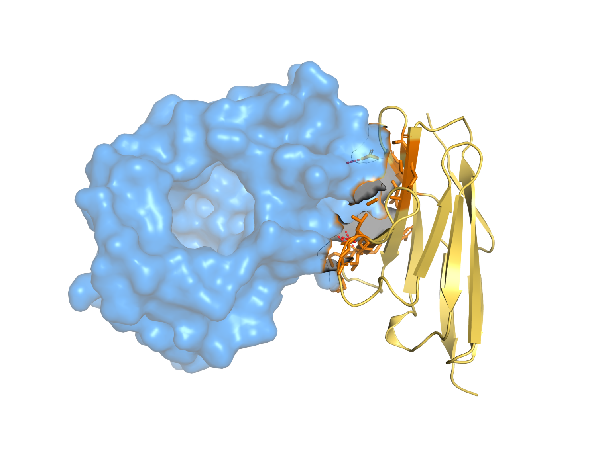
BoltzGen이 만든 최종 디자인 1개의 실제 구조(vanilla 단백질 바인더
+ 타깃). 이런 복합체가 --budget개만큼 나와요. (렌더링
레시피: ../FIGURE_PLAN.md)
그리고 --output 폴더에는 이런 파일
구조가 생겨요(우리 실측 트리 그대로):
results/ # = --output
├── config/ # 스텝별 설정 yaml (6~7개)
├── steps.yaml # 실행된 스텝 매니페스트
├── <name>.cif # 설계 명세 시각화
│
├── intermediate_designs/ # [design] 백본
│ ├── <name>_0.cif ... _N.cif # 디자인된 백본
│ └── <name>_0.npz ... # 메타데이터(NPZ)
│
├── intermediate_designs_inverse_folded/ # [inverse_folding/folding/analysis]
│ ├── <name>_*.cif, *.npz
│ ├── refold_cif/ # 재접힘 복합체 (분석·시각화의 진짜 입력!)
│ ├── refold_design_cif/ # 바인더 단독 재접힘
│ ├── aggregate_metrics_analyze.csv
│ └── per_target_metrics_analyze.csv
│
└── final_ranked_designs/ # [filtering] 최종 결과
├── final_<budget>_designs/ # 최종 선별셋
│ ├── rank1_<name>_K.cif ... # 순위별 CIF (서열+구조 포함)
│ └── before_refolding/
├── all_designs_metrics.csv # 전체 디자인 메트릭
├── final_designs_metrics_<budget>.csv # 최종 선별셋 메트릭
└── results_overview.pdf # 요약 시각화 PDF꼭 기억할 세 가지:
final_ranked_designs/final_<budget>_designs/rankN_<name>_K.cif예요.
폴더가 아니라 순위 붙은 단일 CIF 파일이고, 서열·구조가
그 안에 다 들어 있어요. (summary.csv, 디자인별
rank_001/ 폴더, 별도
sequence.fasta/metrics.json 같은 건
생기지 않아요 — 흔한 오해예요.)final_designs_metrics_<budget>.csv(최종셋)와
all_designs_metrics.csv(전체)에 들어 있어요. 한 디자인이 한
행, 컬럼은 240여 개예요(Ch.05).refold_cif/(또는 최종 CIF) 기준. inverse_folded 직후 파일은
측쇄가 원점에 뭉쳐 있어요(Ch.01).주의 — 실행 로그는 표준출력으로 나와요. 출력 폴더에
run.log가 자동 생성되지는 않으니, 따로 추적하려면boltzgen run ... > run.log 2>&1처럼 직접 리다이렉트하세요.
같은 boltzgen run이라도 프로토콜에 따라 명령과 결과가
달라져요. 대표 3종을 미리 맛보기로(자세한 실습은 Part B):
단백질–단백질 바인더 (Ch.01의 기본):
boltzgen run example/vanilla_protein/1g13prot.yaml \
--output out/protein --protocol protein-anything --num_designs 1000 --budget 50고리형 펩타이드 (Cys 자동 금지, design_folding 생략 → Ch.07):
boltzgen run example/cyclotide/3ivq.yaml \
--output out/peptide --protocol peptide-anything --num_designs 1000 --budget 30소분자 결합 + 친화도 (affinity 스텝 추가 → Ch.10):
boltzgen run example/protein_binding_small_molecule/chorismite.yaml \
--output out/sm --protocol protein-small_molecule --num_designs 3000 --budget 40심화 — 소분자는 결합부위가 까다로워 더 많은 디자인(3,000+)을 권장하고, 펩타이드는 작아서 상대적으로 적게도 괜찮아요. 타깃 난이도에 맞춰
num_designs를 조절하는 감각을 길러두세요.
오래 걸리는 작업은 진행 상황을 봐야 안심이 되죠.
# 다른 터미널에서 GPU 사용량
watch -n 1 nvidia-smi
# 로그 추적 (리다이렉트했다면)
tail -f run.log로그에서 각 스텝이 Pipeline step k of N →
Step ... completed successfully in Xs로 찍히는지 보면 돼요.
특정 스텝에서 멈추거나 Traceback이 나오면, 그 스텝의 오류
메시지를 위로 스크롤해 확인하세요(예: design에서
undefined symbol이면 Ch.03 cuBLAS 문제).
boltzgen run은 내부적으로 configure →
execute, protein-anything 기준 6스텝(소분자 7,
펩타이드/나노바디/항체 5)이에요.--num_designs(많이 뽑아 좋은 꼬리)와
--budget(다양성 선별)이 품질·시간의 핵심.
작게 테스트 → 크게 프로덕션.--steps로 부분 실행 — 무거운 단계는 한
번, filtering은 여러 번 반복(선택 기준 튜닝).--config로 스텝 내부 제어 —
워커·디바이스·배치 등 고급 노브.final_<budget>_designs/rankN_*.cif,
메트릭은 *_metrics_*.csv. 분석은
refold_cif 기준.드디어 설계 결과가 나왔어요. 그런데 여기서 많은 분들이 길을 잃어요. 메트릭 CSV에 컬럼이 240개가 넘거든요! 이걸 다 봐야 하나? 어떤 게 중요하지? 무슨 값이면 좋은 거지?
이 챕터에서는 이 수많은 메트릭을 카테고리별로 정리하고, 각각이 무엇을 재는지·어떤 값이면 좋은지·어떻게 순위가 매겨지는지를 깊이 있게 풀어드릴게요. 그리고 마지막엔 우리가 직접 만든 실측 그래프로 한눈에 보는 법까지요.
실습 — 노트북
05_analysis_viz.ipynb가 이 챕터의 로드·해석·그래프를 그대로 담고 있어요. 그래프는../boltzgen_viz.py모듈을 씁니다.
겁먹지 마세요. 240여 개 컬럼은 사실 7개 카테고리로 묶여요. 우리가 실제로 자주 보는 건 이 중 10여 개뿐이에요.
| 카테고리 | 무엇을 재나 | 대표 컬럼 |
|---|---|---|
| 신뢰도(confidence) | 구조·인터페이스 예측이 얼마나 믿을 만한가 | design_ptm, design_to_target_iptm,
complex_plddt |
| 위치오차(PAE) | 잔기 간 상대 위치 오차 | min_design_to_target_pae |
| 구조편차(RMSD) | 설계 vs 재예측 구조 차이 | filter_rmsd,
designfolding-filter_rmsd |
| 인터페이스 | 결합면의 물리적 상호작용 | plip_hbonds_refolded,
plip_saltbridge_refolded,
delta_sasa_refolded |
| 개발성(liability) | 항체·나노바디의 제조 안정성 | liability_score, liability_*_count |
| 친화도(affinity) | 소분자 결합 세기 | affinity_pred_value,
affinity_probability_binary |
| 다양성/신규성 | 디자인 간 다양성, 학습셋 대비 신규성 | vendi_*, novelty |
참고 — 일부 컬럼은 데이터셋·실행 옵션에 따라 생성되지 않을 수 있어요.
affinity_*는 소분자 프로토콜에서만,liability_*는 항체/나노바디에서만 나오고,vendi_*·novelty·complex_plddt는 실행·분석 옵션에 따라 달라요. 본인 CSV의 실제 컬럼은df.columns로 확인하세요.
하나씩 깊이 들어가 볼게요.
먼저 TM-score(Template Modeling score)를 알아야 해요. 두 구조가 얼마나 비슷한지를 0~1로 재는 지표인데, 이렇게 정의돼요:
여기서 는 정렬된
번째 잔기 쌍의 거리,
은 길이예요. 핵심은
분모에 길이 보정
이 들어가서, RMSD와 달리
길이에 덜 휘둘린다는 점이에요. 그래서 단백질 비교의 표준 지표로
쓰여요. TM ≥ 0.5면 “같은 fold”로 봐요.
pTM(predicted TM-score)은 모델이 스스로 예측한 TM-score예요. 즉 “내가 예측한 이 구조가 실제 구조와 TM 얼마쯤 될 것 같다”는 자기 신뢰도죠. BoltzGen에서:
design_ptm = 설계 단백질 자체의 구조
신뢰도. 높을수록 좋음. 0.7 이상이면 양호, 0.8 이상이면
우수.ipTM(interface pTM)은 pTM을 서로 다른 체인 사이의 잔기 쌍에만 적용한 거예요. 즉 “바인더와 타깃이 만나는 면을 얼마나 자신 있게 예측했나”예요.
design_to_target_iptm = 바인더-타깃
인터페이스 신뢰도. 바인더 설계에서 가장 결정적인 단일
지표예요. 결합 자체의 믿음직함을 재니까요.심화 — 왜 ipTM이 pTM보다 중요할까요? pTM이 높아도(구조는 잘 잡혀도) ipTM이 낮으면 “혼자서는 잘 접히지만 타깃엔 안 붙는” 디자인일 수 있어요. 우리 목적은 결합이니, 인터페이스 신뢰도가 본질이에요. 실제로 나노바디·핵산 실습에서 ipTM이 순위를 강하게 좌우하는 핵심 지표임을 보게 돼요(단, 최종 순위는 ipTM·pTM·PAE 종합).
pLDDT(predicted lDDT)는 잔기 하나하나의 국소 구조
신뢰도예요(0~100 또는 0~1). complex_plddt로 들어 있어요.
CIF 파일의 B-factor 칸에도 인코딩돼서, PyMOL에서 색으로 볼 수
있어요(파랑=높음, 빨강=낮음).
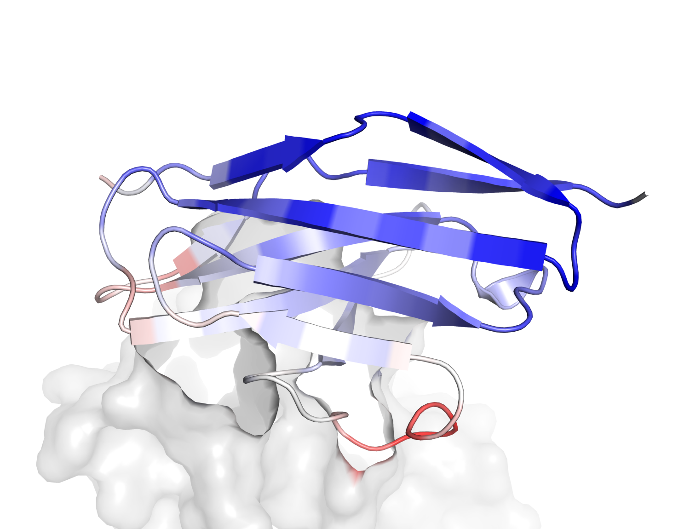
실제 1위 디자인(바인더)을 pLDDT로 색칠한 모습(파랑=신뢰도 높음,
빨강=낮음). 보통 코어는 파랗고(안정) 말단·loop는 붉은 편이에요. 메트릭
숫자(complex_plddt)를 구조 위에서 직접 눈으로 확인하는
방법이에요. (렌더링: ../FIGURE_PLAN.md)
주의 — 흔한 오해 하나. pLDDT는 순위 결정의 주 지표가 아니에요. BoltzGen 바인더 설계의 순위는 ipTM·pTM·PAE·H-bond·salt-bridge·ΔSASA 종합으로 정해지고, pLDDT(
complex_plddt)는 240여 컬럼 중 하나의 보조 지표일 뿐이에요. (다른 도구 경험 때문에 pLDDT를 1순위로 보는 분들이 많아 강조해요.)
PAE는 “잔기 A 기준으로 정렬했을 때 잔기 B의 위치 오차가 몇 Å일까”의 예측이에요. 낮을수록 좋아요(단위 Å).
min_design_to_target_pae = 바인더-타깃
사이 최소 PAE. 낮을수록 인터페이스 위치가 확실. 5Å
미만이면 좋은 편.Ch.01의 “자기일관성” 기억하시죠? 그걸 숫자로 재는 게 RMSD예요. 설계한 백본 구조와 Boltz-2가 서열로부터 다시 예측한 구조가 얼마나 다른지를 Å로 재요:
filter_rmsd = 필터링에 쓰는 RMSD.
2Å 미만 우수, 2~5Å 양호, 5Å 초과 주의.designfolding-filter_rmsd = 바인더를
단독으로 다시 접었을 때의 RMSD(단백질 프로토콜만). 타깃 없이도
구조가 유지되는지.심화 — RMSD가 낮다는 건 “설계 의도대로 서열이 그 구조를 실현한다”는 뜻이에요. 즉 합성했을 때 의도한 모양이 나올 가능성이 높죠. 다만 RMSD가 낮아도 ipTM이 낮으면 “모양은 맞는데 안 붙는” 경우라, RMSD와 ipTM을 함께 봐야 해요.
구조가 맞아도, 실제로 어떻게 붙는지를 봐야 해요. BoltzGen은 PLIP(Protein-Ligand Interaction Profiler) 등으로 결합면의 물리적 상호작용을 세요.
plip_hbonds_refolded = 인터페이스
수소결합 개수. 많을수록 결합이 단단할 수 있음(단, 위치·맥락이 더
중요).plip_saltbridge_refolded = 염다리(이온
결합) 개수. 전하 상호작용.delta_sasa_refolded = 결합으로 묻히는
표면적(ΔSASA, Ų). 클수록 접촉면이 넓다 → 강한 결합
경향.주의 — 수소결합 개수만 보고 판단하지 마세요. 실측에서 H-bond 0개인데 순위가 높은 디자인도 있어요(소수성·정전기 상호작용으로 충분히 결합). 인터페이스 메트릭은 조합으로 봐야 해요.
항체/나노바디 프로토콜에서는 특별한 메트릭군이 추가돼요. 바로 developability liabilities(개발성 위험 모티프)예요. 이건 “실험에서 잘 붙느냐”를 넘어 “약으로 만들 수 있느냐”를 봐요.
| 컬럼 | 의미 |
|---|---|
liability_score |
종합 위험 점수 (낮을수록 좋음) |
liability_num_violations |
위반 모티프 총 개수 |
liability_high/medium/low_severity_violations |
심각도별 위반 수 |
liability_MetOx_count |
메티오닌 산화 위험 |
liability_TrpOx_count |
트립토판 산화 위험 |
liability_AspCleave/AspBridge_count |
아스파르트산 이성질화·절단 위험 |
liability_ProtTryp_count |
단백분해 효소 절단 부위 |
liability_HydroPatch_count |
소수성 패치(응집 위험) |
심화 — 이게 왜 중요할까요? 결합은 잘하는데 Met이 산화되거나 Asp가 이성질화되면, 보관 중에 변질되거나 면역원성이 생겨 약으로 못 써요. 그래서 항체 설계에서는 ipTM뿐 아니라
liability_score가 낮은(=제조 안정성이 좋은) 후보를 함께 골라요. (Ch.08 항체 실습에서 실제 liability를 봅니다.)
소분자 프로토콜(protein-small_molecule)에서만 나오는
메트릭이에요. 별도의 affinity 스텝(Ch.04)이 예측해줘요.
affinity_pred_value = 예측 결합 친화도
(대략 결합 세기의 회귀값).affinity_probability_binary (및
_binary1, _binary2) = “결합한다/안 한다” 이진
확률.심화 — 친화도 예측은 본질적으로 어려운 문제라, 절대값보다 상대 비교로 쓰는 게 안전해요. “후보들 중 affinity_pred_value가 상대적으로 높은 것”을 우선 검토하는 식으로요. (Ch.10에서 chorismate 결합 효소로 실습.)
vendi_*(vendi_tm_align 등) = 선택된
디자인 집합의 다양성 점수. 서로 얼마나 다른지.novelty = 학습 데이터(기존 단백질)
대비 얼마나 새로운가(FoldSeek 기반). 신규 fold를 원하면
높을수록 좋음.이 둘은 개별 디자인보다 선별 집합 전체의 성격을 평가할 때 봐요.
rank_* → final_rank가장 자주 받는 질문이에요. “왜 pTM 1등이 최종 1등이 아니죠?”
BoltzGen은 한 메트릭으로 줄세우지 않아요. 여러
메트릭을 각각 순위화한 뒤(컬럼 rank_*) 종합해요:
rank_design_to_target_iptm (ipTM)
rank_design_ptm (pTM)
rank_neg_min_design_to_target_pae (PAE, 낮을수록 좋으니 음수화)
rank_plip_hbonds_refolded (H-bond)
rank_plip_saltbridge_refolded (salt-bridge)
rank_delta_sasa_refolded (ΔSASA)
↓ 종합
max_rank → secondary_rank → final_rank그래서 한 지표만 특출난 디자인보다, 여러 지표가 고르게 좋은 디자인이 위로 올라와요.
budget개를 최종 선별할 때는 품질만이 아니라 다양성도
봐요. 목적함수는 대략 이래요:
여기서 는 이미 뽑힌 집합,
은 서열
유사도,
는 품질↔︎다양성
가중치(
--alpha)예요. 이면 품질만,
이면 다양성만.
이걸 lazy-greedy로 하나씩 골라
budget을 채워요.
심화 —
--alpha를 올리면 서로 더 다른 디자인이 뽑혀요(실험 다각화). 기본값은 작아요(펩타이드 0.01, 그 외 0.001). Ch.06에서 이 값을 조절해 선별 성격을 바꿔봐요.
filter.ipynbBoltzGen 레포에는 filter.ipynb라는 공식
필터링·시각화 노트북이 들어 있어요. 분석까지 끝난 결과에서:
metrics_override)alpha)results_overview.pdf(표·히스토그램·산점도·서열
로고·liability 히트맵)핵심 파라미터:
Filter(
design_dir=..., outdir=..., budget=5,
use_affinity=False, # 소분자면 True
refolding_rmsd_threshold=2.5, # RMSD 하드 필터
alpha=0.1, # 품질↔다양성
metrics_override={...}, # 메트릭별 중요도
additional_filters=[...], # 추가 하드 필터
)필터링은 몇 초면 끝나니,
boltzgen run --steps filtering이나 이 노트북으로
기준을 여러 번 바꿔가며 최적 선별을 찾는 게 실전
워크플로우예요(Ch.06).
수십 개 메트릭을 표로만 보면 감이 안 와요. 그래서 우리는
../boltzgen_viz.py 모듈로 핵심 4지표를 2×2
그래프로 그려요. 아래는 실제 vanilla 단백질 설계(10개 최종
디자인)의 메트릭 개요예요:
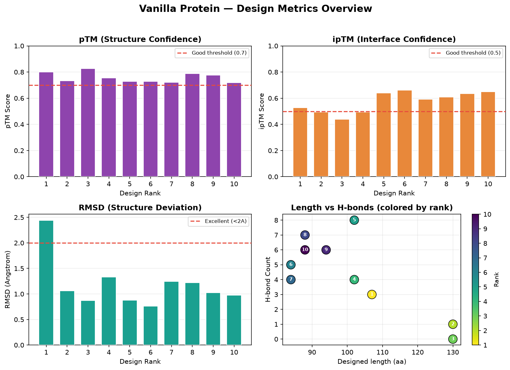
이 그림을 읽는 법:
심화 — 이 한 장으로 “구조는 다 괜찮은데 인터페이스(ipTM)에서 갈린다”는 핵심을 즉시 파악할 수 있어요. 실험 후보를 고른다면 ipTM이 높은 rank 5·6·10을 우선 보고, 구조 안정성을 원하면 RMSD가 최저인 디자인을, 다양성을 원하면 서로 다른 길이·전략을 섞어 고르면 돼요. 같은 모듈로 항체·나노바디·핵산·소분자 그래프도 그려요(Part B).
추가로, 메트릭끼리 얼마나 독립적인지(상관관계)를 보면 “어떤 지표를
함께 봐야 하는지” 감이 와요. 보통 pTM과 ipTM은 약한 상관(서로 다른
정보), 길이와 H-bond는 중간 상관을 보여요. 즉 각 메트릭이
독립적인 정보를 주니 종합 판단이 필요하다는 결론으로
이어져요(노트북 04에서 상관 히트맵 생성).
design_to_target_iptm)이 결합의 핵심
지표, RMSD는 자기일관성, 둘을 함께 봐야 해요.complex_plddt)는 순위의 주 지표가
아니에요 — 보조 지표.rank_* 종합(final_rank), 선별은
품질↔︎다양성(alpha)의 lazy-greedy.boltzgen_viz.py의 2×2 개요 그래프로
핵심을 한눈에 — “구조는 OK, 인터페이스에서 갈린다”를 즉시 파악.여기까지 오셨다면 이제 BoltzGen을 “돌릴 줄 아는” 단계는 넘었어요. 이 챕터에서는 진짜 전문가들이 쓰는 고급 전략을 다뤄요. 단순히 한 번 돌리는 게 아니라, 여러 단계를 조합하고, 자동화하고, 커스터마이즈하고, 실제 연구·산업 문제에 적용하는 법이에요.
이 챕터의 기법들을 익히면, 수백~수천 개 디자인을 효율적으로 걸러내고, 반복 실험을 자동화하고, 특정 목적에 맞게 BoltzGen을 길들일 수 있게 돼요.
실습 — 노트북
06_advanced_filtering.ipynb가 이 챕터의 필터링·자동화 패턴을 담고 있어요.
가장 중요한 고급 전략이에요. 무작정 6만 개를 돌려서 다 분석하는 건 비효율적이에요. 대신 단계적으로 좁혀가요.
Level 1 — 넓고 얕게: num_designs 大, 빠른 필터
boltzgen run spec.yaml --num_designs 10000 --budget 200 --output L1
↓ 상위 후보 선별, YAML 제약 보강(결합부위 좁히기 등)
Level 2 — 좁고 깊게: 유망 영역 집중 재생성
boltzgen run spec_refined.yaml --num_designs 5000 --budget 20 --output L2
↓
Level 3 — 최종 검증: 실험 가능한 top 5~10이 방식의 핵심은 Level이 올라갈수록 num_designs는 줄이고 제약은 강화하는 거예요. Level 1에서 “어느 결합 전략이 잘 되는지” 감을 잡고, Level 2에서 그 방향으로 집중 탐색하는 거죠. 비용은 줄이고 품질은 올리는 패턴이에요.
--steps로 파이프라인 분해Ch.04에서 --steps를 배웠죠. 고급에서는 이걸
워크플로우 설계의 핵심 도구로 써요.
# 1) 무거운 생성·검증은 한 번만 (design~analysis)
boltzgen run spec.yaml --output run1 \
--steps design inverse_folding folding design_folding analysis \
--num_designs 5000
# 2) 필터링은 기준 바꿔가며 여러 번 (각 몇 초)
boltzgen run spec.yaml --output run1 --steps filtering --budget 20
boltzgen run spec.yaml --output run1 --steps filtering --budget 50 \
--additional_filters 'designfolding-filter_rmsd<2.0'심화 — 핵심 통찰: 생성(무거움)과 선별(가벼움)을 분리하면, 한 번의 비싼 생성으로 수십 가지 선별 전략을 실험할 수 있어요. “어떤 기준이 실험에서 잘 맞았나”를 데이터로 학습해, 다음 프로젝트의 필터를 개선하는 선순환을 만들 수 있죠.
여러 설정을 체계적으로 비교하려면 스윕(sweep)을 자동화해요.
# sweep.py — num_designs × budget 조합 자동 실행
import subprocess, itertools, pandas as pd, pathlib
budgets = [20, 50, 100]
nums = [1000, 5000]
results = []
for budget, num in itertools.product(budgets, nums):
out = f"sweep/b{budget}_n{num}"
subprocess.run(["boltzgen","run","design.yaml","--output",out,
"--protocol","protein-anything",
"--num_designs",str(num),"--budget",str(budget)], check=True)
csv = pathlib.Path(out)/"final_ranked_designs"/f"final_designs_metrics_{budget}.csv"
df = pd.read_csv(csv); df["budget"]=budget; df["num_designs"]=num
results.append(df)
allr = pd.concat(results)
# 설정별 평균 ipTM 비교 → 최적 운영점 탐색
print(allr.groupby(["num_designs","budget"])["design_to_target_iptm"].mean())여러 타깃·프로토콜을 동시에 돌리는 패턴도 있어요(GPU 여유가 있을 때):
boltzgen run spec.yaml --protocol protein-anything --output out/prot &
boltzgen run spec.yaml --protocol peptide-anything --output out/pep &
wait # 모두 완료 대기 후 비교심화 — GPU가 하나면 동시 실행은 메모리 경합·OOM을 부르니, 순차 실행 + 백그라운드 큐가 안전해요. 큰 작업은
--num_designs를 쪼개 여러 번 돌린 뒤boltzgen merge로 합치는 게 정석이에요(메모리 안정성 + 중단 복구).
filtering 스텝은 여러 강력한 노브를 제공해요. 이걸 잘
쓰면 “내 프로젝트에 맞는 선별 기준”을 정밀하게 만들 수 있어요.
--metrics_override —
메트릭별 가중치어떤 메트릭을 더/덜 중요하게 볼지 가중치를 줘요(값이 클수록 덜 중요하게 = down-weight).
# 수소결합과 ΔSASA의 중요도를 낮춤 (ipTM·RMSD를 상대적으로 강조)
boltzgen run spec.yaml --output out --steps filtering \
--metrics_override plip_hbonds_refolded=4 delta_sasa_refolded=2--additional_filters
— 하드 필터특정 조건을 못 넘으면 아예 탈락시켜요.
boltzgen run spec.yaml --output out --steps filtering \
--additional_filters 'design_ALA>0.3' 'design_GLY<0.2' \
'designfolding-filter_rmsd<2.0'feature>threshold 또는
feature<threshold 형식이에요. 위 예는 “Ala 비율이 너무
높거나, 단독 재접힘 RMSD가 2Å 넘으면 제외”.
--size_buckets —
크기 구간별 할당길이 구간마다 최대 몇 개씩 뽑을지 정해요(다양한 크기 확보).
boltzgen run spec.yaml --output out --steps filtering \
--size_buckets 10-20:5 20-30:10--alpha — 품질 ↔︎ 다양성Ch.05의 다양성 목적함수 가중치예요. 0이면 품질만, 1이면 다양성만.
boltzgen run spec.yaml --output out --steps filtering --alpha 0.3 # 다양성 강조--filter_biased
— 아미노산 조성 이상치 제거ALA/GLY/GLU/LEU/VAL이 비정상적으로 많은(생성 모델이 종종 만드는 “치트성”) 디자인을 거를지(기본 true).
심화 — 이 네 노브(
metrics_override/additional_filters/size_buckets/alpha)를 조합하면 “내 실험 성공률 데이터에 맞춘 맞춤 선별기”를 만들 수 있어요. 예를 들어 과거 실험에서 “ΔSASA 큰 게 잘 됐다”면 그 가중치를 올리고, “Ala 많으면 실패했다”면 하드 필터를 거는 식으로요. 이게 AI 설계를 실험 피드백으로 개선하는 루프의 출발점이에요.
항체·나노바디뿐 아니라, 내가 가진 검증된 단백질 골격을 scaffold로 써서 그 위에 결합부위만 재설계할 수 있어요. scaffold YAML은 이렇게 만들어요:
# my_scaffold.yaml
path: my_protein.cif
include:
- chain: { id: A }
design: # 재설계할 영역
- chain: { id: A, res_index: 26..34,52..59,98..118 }
not_design: # 절대 고정 (구조 핵심·기능 잔기)
- chain: { id: A, res_index: 1..25,35..51,60..97,119.. }
structure_groups:
- group: { id: A, visibility: 2 } # 골격 구조 유지
- group: { id: A, visibility: 0, res_index: 26..34,52..59,98..118 } # 결합부위는 자유
design_insertions: # 결합부위 길이 가변 (loop 연장)
- insertion: { id: A, res_index: 26, num_residues: 1..5 }
reset_res_index:
- chain: { id: A }그리고 타깃 YAML에서 이 scaffold를 불러와요:
entities:
- file: { path: target.cif, include: [ { chain: { id: B } } ] }
- file: { path: my_scaffold.yaml } # 여러 개 나열하면 BoltzGen이 최적 선택심화 — 여러 scaffold를 동시에 주면, BoltzGen이 각 골격으로 설계를 시도하고 자동으로 최적을 선택해요. CDR3 길이가 다른 scaffold들을 섞으면(짧은 것=평평한 epitope, 긴 것=깊은 pocket) 다양한 타깃 형태에 대응할 수 있어요. 이게 Ch.08(Fab 14종)·Ch.09(나노바디) 실습의 핵심 전략이에요.
BoltzGen은 모델 컴포넌트를 교체·조절할 수 있어요(연구용 고급 기능).
| 옵션 | 용도 |
|---|---|
--design_checkpoints A.ckpt B.ckpt |
백본 생성 체크포인트 교체(기본 diverse+adherence) |
--inverse_fold_checkpoint C.ckpt |
역접힘 모델 교체(fine-tune한 가중치 등) |
--folding_checkpoint D.ckpt |
검증(Boltz-2) 체크포인트 교체 |
--affinity_checkpoint E.ckpt |
친화도 예측기 교체 |
--step_scale, --noise_scale |
확산 스케줄 고정(탐색 보수성 조절) |
심화 — Fine-tuning/custom: 특정 단백질군(예: 막단백질, 특정 효소 패밀리)에 대해 역접힘 모델을 자체 데이터로 fine-tune한 뒤
--inverse_fold_checkpoint로 끼워 넣으면, 그 도메인에 특화된 서열 설계가 가능해요. 또--design_checkpoints로 다양성/제약준수 비중이 다른 커스텀 확산 모델을 조합할 수도 있고요. 이건 연구 프론티어 영역이라, 표준 워크플로우로 충분치 않을 때만 손대세요.
BoltzGen 결과를 다른 도구로 교차 검증·후처리하면 신뢰도가 올라가요.
AutoDock Vina — 소분자 결합을 독립적으로 재도킹해 친화도 교차 검증.
vina --receptor protein.pdbqt --ligand ligand.pdbqt --out docked.pdbqtPyMOL — 인터페이스 잔기·수소결합·이황화 거리
시각 검증(refold_cif 사용).
ESM / 서열 분석 — 면역원성·발현성·humanness 예측을 서열에 추가로 적용.
MD 시뮬레이션(GROMACS 등) — 상위 후보의 결합 안정성을 동역학으로 검증.
심화 — 권장 검증 파이프라인: BoltzGen(생성·1차 검증) → liability/humanness(서열 필터) → 분자도킹·MD(물리 검증) → 실험. 각 단계가 다른 가정으로 거르니, 통과한 후보의 신뢰도가 곱으로 올라가요.
마지막으로, 이 모든 걸 실제 문제에 어떻게 적용하는지 큰 그림을 그려볼게요.
| 분야 | 적용 | 추천 프로토콜 / 전략 |
|---|---|---|
| 항암 신약 | 종양 단백질 억제 바인더 | nanobody/peptide, 결합부위=기능 부위 |
| 항바이러스 | 표면 단백질 중화 | nanobody-anything, 변이 내성 고려한 부위 선정 |
| 자가면역 | 사이토카인 차단 항체 | antibody-anything, liability 최소화 |
| 진단 | 바이오마커 검출 시약 | nanobody(안정·저비용), 특이성 우선 |
| 효소·그린케미스트리 | 신규 촉매·기질 결합 | protein-small_molecule, affinity 활용 |
| 바이오센서 | 특정 분자 감지 | small_molecule binding, 구조 변화 설계 |
| 합성생물학 | 유전자 조절(DNA/RNA 결합) | DNA/RNA 타깃, zinc finger 패턴(Ch.11) |
실전 케이스 흐름(예: 신약 후보 발굴)
타깃 선정·구조 확보(Ch.02) → 결합부위 전략 수립
→ Level 1 광역 스크리닝(num_designs 10k+)
→ liability/affinity로 필터(Ch.06.4)
→ Level 2 집중 재설계 → top 10~50 선별
→ 도킹/MD 교차검증(Ch.06.7) → 합성·실험 검증
→ 실험 결과로 필터 기준 개선 → 다음 라운드심화 — AI 설계는 실험을 대체하는 게 아니라 앞단을 압축하는 거예요. 핵심 가치는 “수만 개 가상 후보를 며칠 만에 만들고, 정량 메트릭으로 수십 개로 좁혀, 실험 자원을 가장 유망한 곳에 집중”시키는 데 있어요. 그리고 실험 피드백을 필터·모델에 되먹이면(6.4·6.6), 라운드를 거듭할수록 똑똑해지는 폐루프가 완성돼요.
--steps로 생성/선별 분리 — 비싼 생성
한 번, 가벼운 필터 여러 번.merge.metrics_override·additional_filters·size_buckets·alpha)로
맞춤 선별기 구축.Part B에 오신 걸 환영해요! 여기서부터는 타깃 타입별 실전 설계를 직접 해봐요. 첫 주자는 펩타이드, 그중에서도 BoltzGen의 표현력이 가장 빛나는 고리형(cyclic)·이황화(disulfide) 펩타이드예요.
이 챕터는 실제로 우리가 돌린 cyclotide(3ivq 타깃, 34아미노산 고리형 펩타이드) 결과를 그래프와 함께 해석해요.
실습 — 노트북에서 직접 돌리려면
04_run_pipeline.ipynb(실행)와05_analysis_viz.ipynb(해석) 참고.
펩타이드는 단백질보다 작아요(보통 수십 아미노산). 그래서 장점이 뚜렷해요.
| 특성 | 단백질 | 펩타이드 |
|---|---|---|
| 크기 | 수백 잔기 | 수십 잔기 |
| 합성 | 어렵고 비쌈(세포 발현) | 화학 합성(SPPS) 가능, 상대적 저렴 |
| 경구 투여 | 거의 불가 | 고리형은 일부 가능 |
| 안정성 | 변수 | 제약(고리·이황화)으로 크게 향상 |
실제 펩타이드 약물도 많아요. 인슐린(51잔기, 이황화 2개), 비만 치료제 GLP-1 작용제, 면역억제제 cyclosporine(고리형) 등. 즉 작지만 제대로 제약을 걸면 강력한 분자예요.
peptide-anything 프로토콜의 특성Ch.01에서 봤듯, 펩타이드는 전용 프로토콜을 써요. 내부적으로 두 가지가 다르다는 걸 꼭 기억하세요.
constraints로 명시한 이황화용 Cys는 별개로 배치돼요.
자유 Cys로 인한 잘못된 이황화/응집을 막는 거예요.boltzgen run example/cyclotide/3ivq.yaml \
--output workbench/cyclotide --protocol peptide-anything \
--num_designs 100 --budget 10cyclic: true선형 펩타이드의 가장 큰 약점은 양 끝(N-말단, C-말단)이 노출되어 단백질 분해효소(protease)에 쉽게 잘린다는 거예요. 그래서 생체 내 반감기가 짧아요.
고리형은 머리와 꼬리를 이어 끝이 없게 만들어요. 그러면:
YAML에서는 한 줄이면 돼요:
- protein:
id: B
sequence: 3C8C6C5C3C1C2
cyclic: true # 머리-꼬리 펩타이드 결합 자동 생성cyclic: true를 주면 N-말단과 C-말단 사이에 펩타이드
결합이 자동 형성돼요(head-to-tail cyclization).
constraints / bond이황화결합(disulfide bond)은 두 시스테인의 황(SG) 원자가 산화되어 만드는 공유결합(-S-S-)이에요. 펩타이드 구조를 못박아 고정하는 역할을 해요.
constraints:
- bond:
atom1: [B, 4, SG] # chain B, 잔기 4, SG 원자
atom2: [B, 26, SG] # 잔기 26의 SG와 연결 → 이황화형식은 [체인, 잔기번호, 원자이름]이에요. 이황화 거리의
이상값은 약 2.0~2.1 Å예요(결과 검증 시 PyMOL로
측정).
심화 — 시스테인을 서열상 너무 멀리(예:
5C20C5) 두면 이황화가 안 닫힐 수 있어요. 보통 두 Cys 사이 3~15잔기가 적당해요. 거리가 8Å처럼 크게 나오면 패턴을 좁히세요(5C10C5).
cyclotide는 식물이 방어용으로 만드는 천연 고리형 펩타이드예요. 핵심은 3쌍의 이황화결합이 서로 얽혀 매듭(knot)을 이루는 cystine knot 구조예요. 이게 극도로 안정해서 분해효소에 거의 끄떡없어요.
서열 패턴 3C8C6C5C3C1C2를 해석하면:
3개 + C + 8개 + C + 6개 + C + 5개 + C + 3개 + C + 1개 + C + 2개
= 시스테인 6개, 총 34잔기시스테인 6개가 3쌍의 이황화를 만들고, 고리형까지 더해져 cystine knot이 완성돼요.
entities:
- protein: { id: B, sequence: 3C8C6C5C3C1C2, cyclic: true }
- file: { path: 3ivq.cif, include: [ { chain: { id: A } } ], structure_groups: "all" }
constraints:
- bond: { atom1: [B, 4, SG], atom2: [B, 26, SG] }
- bond: { atom1: [B, 13, SG], atom2: [B, 30, SG] }
- bond: { atom1: [B, 20, SG], atom2: [B, 32, SG] }secondary_structure펩타이드가 작아서 구조가 흔들릴 때, 원하는 2차구조를 강제할 수 있어요.
- protein:
id: B
sequence: 1C11..16C1
secondary_structure:
sheet: 1,3..11 # 이 잔기들을 beta-sheet로심화 — sheet는 최소 3~4잔기 이상이어야 형성돼요. 너무 짧게 지정하면 loop로 끝나요. 또 2차구조는 선택 기능이라, 굳이 강제 안 해도 AI가 알아서 최적화해요 — 특정 구조가 결합에 꼭 필요할 때만 쓰세요.
Ch.02의 binding_types를 펩타이드에 그대로 써요. 예를
들어 타깃의 특정 3잔기(343, 344, 251)에만 결합하는 펩타이드:
- file:
path: target.cif
include: [ { chain: { id: A } } ]
binding_types:
- chain: { id: A, binding: 343,344,251 }
structure_groups: "all"결과 CSV에서 인터페이스 접촉 잔기를 확인해, 지정한 자리에 실제로 붙었는지 검증하세요.
자, 실제로 돌린 결과를 보죠. peptide-anything, 고리형 +
이황화 3쌍, 3C8C6C5C3C1C2(34잔기) 설계의 최종 10개
디자인이에요.
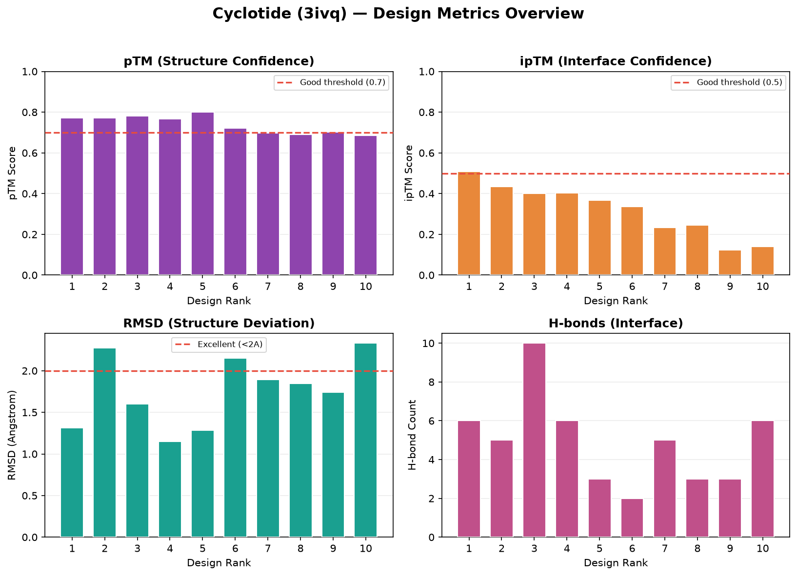
실제로 만든 1위 디자인의 구조를 PyMOL로 렌더링하면 이래요:
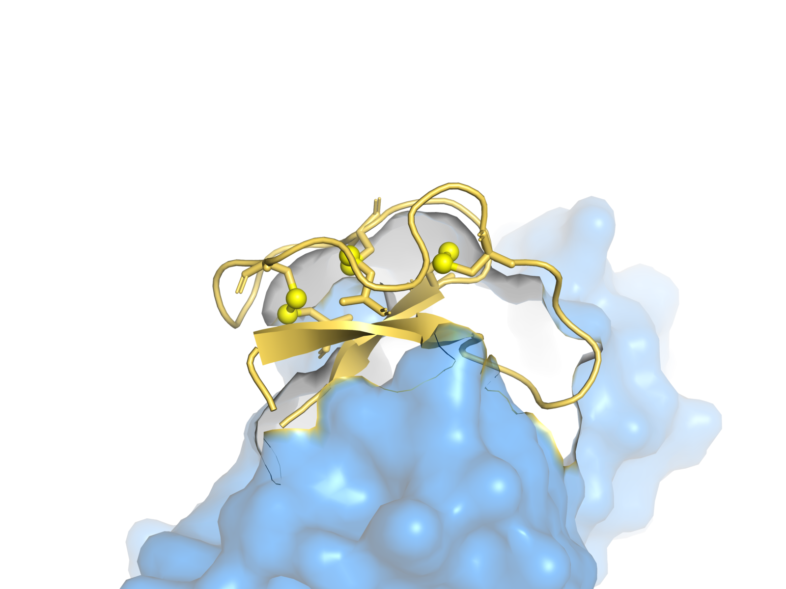
설계한 cyclotide(금색)가 타깃(파랑 표면)에 결합한 모습. 노란 구는
이황화결합의 SG(황) 원자, 빨간 점선은 cystine knot을 이루는 3쌍의
이황화(Cys4–26, 13–30, 20–32)예요. 작은 펩타이드가 매듭처럼 단단히
고정된 게 보이죠. (렌더링 레시피:
../FIGURE_PLAN.md)
읽는 법:
가장 인상적인 건 모든 디자인이 정확히 34잔기, 시스테인
6개로 나왔다는 거예요. 즉 우리가 건 3C8C6C5C3C1C2
+ cyclic + 이황화 3쌍 제약을 BoltzGen이 정확히 준수했어요. 자연
cyclotide 크기(29~37잔기)와도 일치하고요.
rank 1 서열 예시: SGVCTPASPSATCPKEGEPCTPGSDCGENCICDS
(34잔기). Cys 위치(4, 13, 20, 26, 30, 32)가 우리가 정의한 3쌍(Cys4–26,
13–30, 20–32)을 이루며 cystine knot을 형성해요.
34잔기 작은 펩타이드라 SPPS(고상 펩타이드 합성)가 용이해요. 합성 후:
실험 후보로는 결합력(ipTM) 최고인 rank 1, 구조 안정성(pTM) 최고인 rank 5, 균형형 rank 4 정도를 함께 테스트하길 권해요.
# 최종 디자인 + 타깃 함께 열기 (refold 구조 사용!)
pymol final_ranked_designs/final_10_designs/rank001_3ivq_02.cif
# 이황화결합 거리 측정 (이상값 ~2.0 Å)
distance bond1, //B/4/SG, //B/26/SG
distance bond2, //B/13/SG, //B/30/SG
distance bond3, //B/20/SG, //B/32/SG
# 고리형 연결 (N말단-C말단)
distance cyclic, //B/1/N, //B/34/Cpeptide-anything은 Cys 자동 금지 +
design_folding 생략(5단계) 가 특징.cyclic: true(고리화) +
constraints/bond(이황화) + 서열 Cys 패턴으로
cystine knot 같은 초안정 구조를 만들어요.이번 실습은 신약 개발에서 가장 중요한 분자 클래스 중 하나, 항체예요. 정확히는 항체의 결합 단편인 Fab(Fragment antigen-binding)를, 실제 임상 항체 골격(scaffold) 위에 CDR만 새로 설계해서 만들어볼 거예요.
타깃은 면역항암의 핵심 표적인 PD-L1(PDB
7uxq)이고, scaffold로는
adalimumab(휴미라)·dupilumab·secukinumab 등 실제 시판 항체
14종을 써요.
실습 — 노트북
08_fab_lab.ipynb. developability(liability) 분석까지 포함해요.
항체(IgG)는 Y자 모양의 큰 단백질(약 150 kDa)이에요. 그 끝의 두 팔이 항원에 결합하는데, 이 팔 부분을 잘라낸 게 Fab예요. Fab는 무거운 사슬(heavy chain)과 가벼운 사슬(light chain)의 가변 도메인(VH, VL)으로 이뤄져요.
결합을 실제로 담당하는 건 가변 도메인 끝의 CDR(Complementarity-Determining Region, 상보성 결정 영역)이에요. CDR은 H1·H2·H3, L1·L2·L3 여섯 개의 loop인데, 그중 CDR-H3가 길이·서열이 가장 다양하고 결합 특이성을 좌우해요.
Fab = [ VH ─ CDR(H1,H2,H3) ] + [ VL ─ CDR(L1,L2,L3) ]
└ framework(고정) ┘ └ CDR(재설계) ┘핵심: framework는 구조 안정성을 담당(거의 고정), CDR은 항원 결합을 담당(다양하게 변함). 그래서 항체 설계 = “검증된 framework는 그대로 두고, CDR만 타깃에 맞게 바꾸기”예요.
완전히 맨땅에서 항체를 설계하는 건 위험해요. 항체는 발현·접힘·안정성이 까다롭거든요. 대신 이미 임상에서 검증된 항체(framework)를 골격으로 빌려와, CDR만 새로 디자인하면:
비유하면, 검증된 자동차 섀시(scaffold)를 가져와 타이어와 핸들(CDR)만 용도에 맞게 교체하는 거예요. 맨땅에서 차를 설계하는 것보다 훨씬 안전하고 빠르죠.
antibody-anything
프로토콜항체 설계는 전용 프로토콜을 써요. 특성은 나노바디와 동일해요(Ch.01).
boltzgen run example/fab_targets/pdl1.yaml \
--output workbench/fab --protocol antibody-anything \
--num_designs 30 --budget 10이 실습의 설계 명세(fab_targets/pdl1.yaml)는 이렇게
구성돼요.
entities:
- file: # 타깃: PD-L1 (7uxq의 A 체인)
path: 7uxq.cif
include: [ { chain: { id: A } } ]
- file: # scaffold 라이브러리 14종 (CDR 그래프팅 템플릿)
path:
- ../fab_scaffolds/adalimumab.6cr1.yaml # 휴미라
- ../fab_scaffolds/dupilumab.6wgb.yaml # 듀피젠트
- ../fab_scaffolds/secukinumab.6wio.yaml # 코센틱스
- ... (총 14종)주의 — Ch.02에서 강조했듯, 타깃 구조
7uxq.cif는 레포에 없어서 RCSB에서 직접 받아야 해요. 안 받고 돌리면FileNotFoundError로 죽어요.curl -sSL -o example/fab_targets/7uxq.cif https://files.rcsb.org/download/7uxq.cif반면 scaffold 14종의
.cif는 레포fab_scaffolds/에 들어 있어요(직접 받을 필요 없음).
각 scaffold는 “어디를 고정하고 어디를 재설계할지”를 기술해요(Ch.06의 커스텀 scaffold와 같은 구조).
# adalimumab.6cr1.yaml (요약)
path: adalimumab.6cr1.cif
include: [ { chain: { id: H } } ]
design: # CDR 영역 재설계
- chain: { id: H, res_index: 27..38,56..65,99..110 }
not_design: # framework 고정
- chain: { id: H, res_index: 1..26,39..55,66..98,111.. }
design_insertions: # CDR3 길이 가변
- insertion: { id: H, res_index: 99, num_residues: 1..12 }심화 — 14종 scaffold를 동시에 주는 이유: 각 항체의 CDR-H3 길이·형태가 달라, 짧은 CDR3는 평평한 epitope에, 긴 CDR3는 깊은 pocket에 유리해요. BoltzGen이 14종으로 각각 시도하고 타깃에 가장 잘 맞는 골격을 자동 선택해요. 즉 “어떤 항체 골격이 PD-L1에 잘 맞을까”를 데이터로 탐색하는 거예요.
항체 설계에서 ipTM만 보면 안 돼요. “약으로 만들 수
있는가”, 즉 developability가 항체의 생명이거든요. Ch.05에서
봤듯, 항체/나노바디 프로토콜은 liability_* 컬럼군을
제공해요.
| liability 모티프 | 무엇이 문제인가 |
|---|---|
MetOx |
메티오닌 산화 → 활성 저하·변질 |
TrpOx |
트립토판 산화 |
AspCleave / AspBridge |
아스파르트산 이성질화·절단 → 불안정 |
ProtTryp |
단백분해 효소 절단 부위 노출 |
HydroPatch |
소수성 패치 → 응집(aggregation) 위험 |
종합 지표 liability_score가 낮을수록
발현·정제·보관이 안정적인, 즉 개발하기 쉬운 후보예요.
심화 — 실전 항체 선별 기준: ① ipTM(결합) ② RMSD(자기일관성) ③ liability_score(개발성) 를 함께 봐요. 결합은 잘하는데 Met 산화·Asp 절단 위험이 크면, 임상으로 못 가요. 그래서 “결합 + 개발성”을 동시에 만족하는 후보를 골라야 해요. CDR3에 산화되기 쉬운 Met/Trp이 몰려 있지 않은지도 확인하고요.
실행이 끝나면(5단계) 메트릭 CSV에서 다음을 봐요.
design_to_target_iptm — PD-L1 결합
신뢰도(가장 중요)design_ptm, filter_rmsd —
Fab 구조 신뢰도·자기일관성num_design — 재설계된 CDR 영역
길이(짧은/긴 CDR 전략 확인)liability_score,
liability_*_count — 개발성designed_chain_sequence — framework
보존 + CDR3 다양성 확인심화 — framework 보존 확인: 항체 가변 도메인은 보통
EVQLVESGGGLVQPGGSLRLSCAAS...처럼 시작해요. 출력 서열의 앞부분(framework)이 scaffold와 거의 동일하면(높은 보존), CDR(중간 loop)만 바뀐 정상적인 그래프팅이 된 거예요. framework가 많이 변했다면not_design영역을 더 넓혀 고정하세요.
실제로 antibody-anything, num_designs 30, budget 10으로
돌린 최종 10개 디자인이에요. 5단계 파이프라인이 정상 완료됐어요.
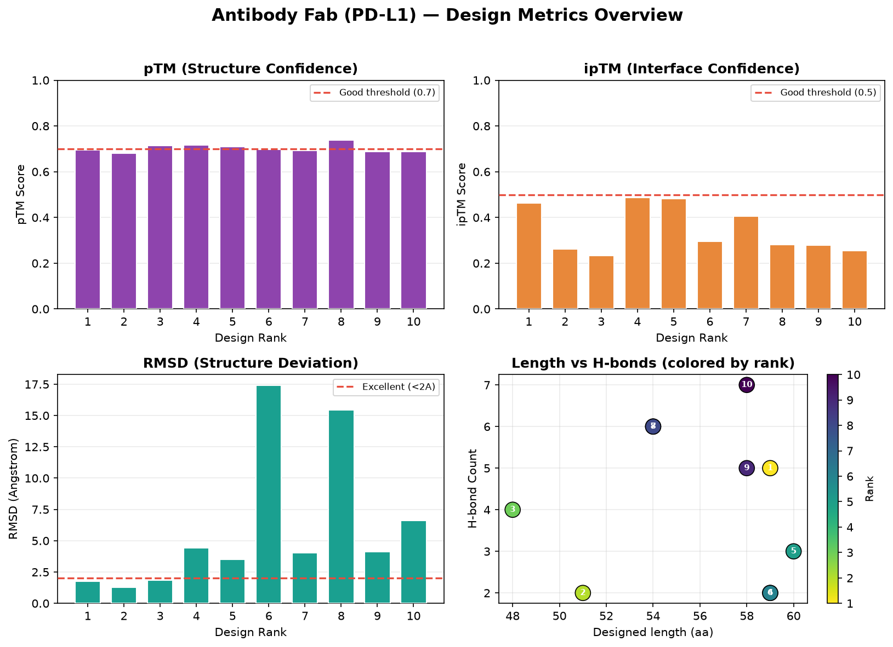
1위 디자인의 복합체 구조예요:
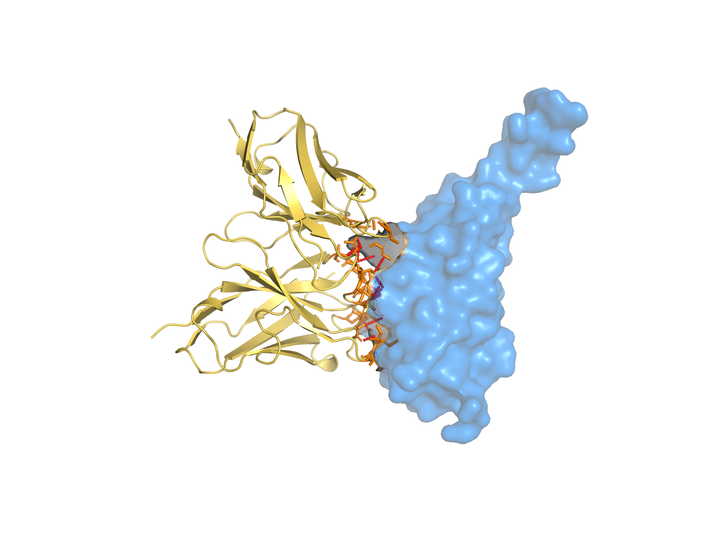
설계한 Fab(금색, VH+VL 두 도메인의 면역글로불린 fold)가 PD-L1(파랑 표면)에 결합한 모습. 주황색이 인터페이스 접촉 잔기예요. CDR 루프가 PD-L1 표면에 닿아 있는 게 보여요.
최종 선별셋의 실제 수치(상위 5개):
| rank | id | pTM | ipTM | RMSD(Å) | 디자인영역(aa) |
|---|---|---|---|---|---|
| 1 | pdl1_05 | 0.694 | 0.463 | 1.77 | 59 |
| 2 | pdl1_13 | 0.682 | 0.262 | 1.29 | 51 |
| 3 | pdl1_18 | 0.714 | 0.233 | 1.84 | 48 |
| 4 | pdl1_11 | 0.716 | 0.486 | 4.41 | 59 |
| 5 | pdl1_07 | 0.708 | 0.482 | 3.49 | 60 |
읽는 법과 해석:
num_design): 48~60aa —
재설계된 CDR 영역(H1/H2/H3 + 삽입) 길이예요.종합하면, rank 1(ipTM 0.463 + RMSD 1.77) 이 결합력과 구조 안정성을 동시에 갖춘 가장 균형 잡힌 후보예요. rank 4·5는 결합력은 좋지만 RMSD가 높아 추가 검증이 필요하고요.
이 실행의 메트릭 CSV에는 liability_score를 비롯한
liability_* 컬럼이 실제로 들어 있어요(노트북
08_fab_lab.ipynb에서 분석). 항체는 결합력(ipTM)만으로
고르면 안 되고, liability_score가 낮은(개발성이 좋은)
후보를 함께 봐야 해요. 예컨대 ipTM이 높아도 CDR에 MetOx·TrpOx·HydroPatch
위반이 몰려 있으면 임상 후보로는 부적합할 수 있어요.
심화 — 이 run은 데모용 소규모(num_designs 30)예요. 실전 항체 캠페인은
num_designs를 수천 개로 올려, ipTM 높음 + RMSD 낮음 + liability_score 낮음을 동시에 만족하는 희귀한 후보를 꼬리에서 건져내요. 규모가 곧 후보 품질이라는 원리(Ch.04)가 항체에서 특히 중요한데, developability라는 추가 제약까지 통과해야 하기 때문이에요.
antibody-anything은 Cys 금지 + design_folding
생략(5단계).liability_*) — ipTM·RMSD에
더해 liability_score가 낮은 후보를 골라야 약이 돼요.7uxq.cif)는 RCSB에서 직접 받고, scaffold
cif는 레포에 포함.이번엔 요즘 가장 뜨거운 분자,
나노바디(nanobody)예요. 항체의 1/10 크기인데도
강력해서, 치료·진단·연구 도구로 폭발적으로 쓰이고 있어요. 이 실습에서는
가상의 penguinpox 바이러스 단백질(PDB
9bkq)을 타깃으로, 여러 나노바디 scaffold에 CDR을 그래프팅해
설계해볼 거예요.
실습 — 노트북
09_nanobody_lab.ipynb. 실제로 우리가 돌린 penguinpox 나노바디 결과를 분석해요.
나노바디는 낙타과 동물(낙타·라마·알파카)에서 발견되는 특별한 항체에서 유래해요. 일반 항체가 무거운 사슬 + 가벼운 사슬로 이뤄진 데 반해, 나노바디는 무거운 사슬의 가변 도메인(VHH) 하나로만 결합해요. 그래서 훨씬 작고 단순하죠.
| 특성 | 일반 항체(IgG) | 나노바디(VHH) | 이점 |
|---|---|---|---|
| 크기 | ~150 kDa | ~15 kDa | 조직 침투 우수 |
| 안정성 | 중간 | 매우 높음 | 상온 보관, 극한 조건 견딤 |
| 생산 | 포유류 세포 | 대장균 가능 | 비용 1/10 수준 |
| 접근성 | 표면 epitope | 좁은 틈·숨은 epitope도 | 항체가 못 가는 곳 |
| 개발 기간 | 2~3년 | 6~12개월 | 빠른 개발 |
실제로 caplacizumab(혈전성 질환 치료제)이 FDA 승인을 받았고, COVID-19 중화 나노바디, 암 표적, 진단 시약 등으로 활발히 쓰여요. 작지만 강력한 분자죠.
Ch.08의 Fab와 비교하면 핵심 차이가 보여요.
프로토콜은 nanobody-anything이고, 내부 설정은
antibody-anything과 동일해요(Cys 자동 금지, design_folding
생략 → 5단계).
boltzgen run example/nanobody_against_penguinpox/penguinpox.yaml \
--output workbench/nanobody --protocol nanobody-anything \
--num_designs 30 --budget 10나노바디 설계도 항체처럼 검증된 골격(scaffold)에 CDR만 그래프팅해요. penguinpox 예제는 4종의 임상 나노바디 scaffold(caplacizumab·vobarilizumab·gefurulimab·ozoralizumab)를 함께 줘요.
entities:
- file: # 타깃: penguinpox 단백질 (9bkq의 B 체인)
path: 9bkq-assembly2.cif
include: [ { chain: { id: B } } ]
- file: # 나노바디 scaffold 4종
path:
- ../nanobody_scaffolds/7eow.yaml # caplacizumab
- ../nanobody_scaffolds/7xl0.yaml # vobarilizumab
- ../nanobody_scaffolds/8coh.yaml # gefurulimab
- ../nanobody_scaffolds/8z8v.yaml # ozoralizumab각 scaffold YAML은 CDR 영역(design)과
framework(not_design)를 나누고, CDR3 길이를
가변(design_insertions)으로 둬요.
# 7eow.yaml (caplacizumab, 요약)
path: 7eow.cif
include: [ { chain: { id: B } } ]
design: # CDR1/2/3 재설계
- chain: { id: B, res_index: 26..34,52..59,98..118 }
structure_groups:
- group: { id: B, visibility: 2 } # 골격 구조 유지
- group: { id: B, visibility: 0, res_index: 26..34,52..59,98..118 } # CDR은 자유
design_insertions: # CDR3 길이 다양화
- insertion: { id: B, res_index: 98, num_residues: 1..14 }
reset_res_index:
- chain: { id: B }심화 — 4종 scaffold는 CDR3 길이·형태가 서로 달라요. BoltzGen이 각 골격으로 설계를 시도하고 타깃 epitope에 가장 잘 맞는 골격을 자동 선택해요. 짧은 CDR3(평평한 표면)부터 긴 CDR3(깊은 pocket)까지 다양하게 대응하니, 타깃 형태를 모를 때 특히 유리해요.
나노바디는 항체와 같은 메트릭군을 봐요(Ch.05·Ch.08).
design_to_target_iptm(ipTM) — 타깃
결합 신뢰도. 나노바디 순위를 좌우하는 핵심
지표(ipTM·pTM·PAE 종합).design_ptm, filter_rmsd —
구조 신뢰도·자기일관성.num_design — 재설계된 CDR 영역
길이(=디자인 영역). 출력 CSV의 이 컬럼이 “CDR 영역이 얼마나 길게
설계됐나”를 알려줘요.liability_* — developability(개발성).
나노바디도 약·시약으로 만들려면 산화·절단·응집 위험이 낮아야 해요.주의 — 흔한 오해: “CDR3 길이”는 BoltzGen이 직접 내놓는 출력 컬럼이 아니에요. 재디자인 영역 길이는
num_design으로, 순수 CDR3 길이는 출력 서열에서 직접 세야 해요. Framework Identity나 Humanness Score도 BoltzGen 출력 컬럼이 아니라, 필요하면 서열을 원본 scaffold와 정렬해 직접 계산하는 값이에요.
나노바디(VHH)의 framework는 매우 보존적이에요. 실제 우리 실측에서 rank 1 서열이 이렇게 시작했어요:
EVQLVESGGGLVQPGGSLRLSCAAS... (framework, 거의 고정)
...CDR1... ...CDR2... ...CDR3(가장 다양)... ...WGQGTQVTVSS (framework)EVQLVESGGGLVQPG로 시작하는 이 패턴은 나노바디의 전형적인
framework예요. 출력 서열의 앞·뒤(framework)가 scaffold와 거의
같고, 중간 CDR loop만 다양하게 바뀌면 정상적인 CDR 그래프팅이
된 거예요. 만약 framework가 많이 변했다면 not_design 영역을
넓혀 더 고정하세요.
심화 — 실측에서 5개 디자인의 framework는 95% 이상 보존됐고(
EVQLVESGGGLVQPG100% 동일), CDR3만 서열·길이가 완전히 달랐어요(7~26잔기). 이 “고정된 골격 + 다양한 CDR3” 패턴이 바로 scaffold 그래프팅이 잘 작동했다는 신호예요.
실제로 nanobody-anything, num_designs 30, budget 10으로
돌린 최종 10개 디자인이에요. 5단계 파이프라인이 정상 완료됐어요.
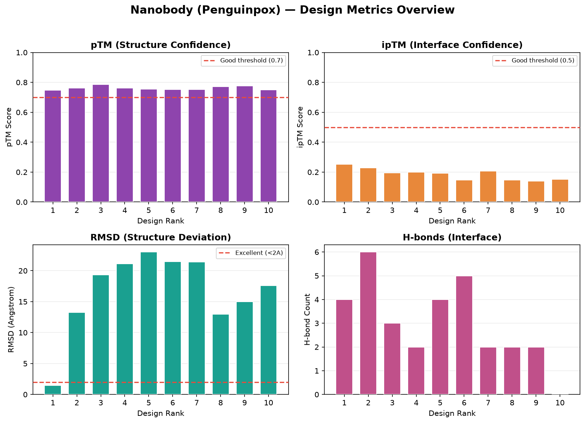
1위 디자인의 복합체 구조예요:
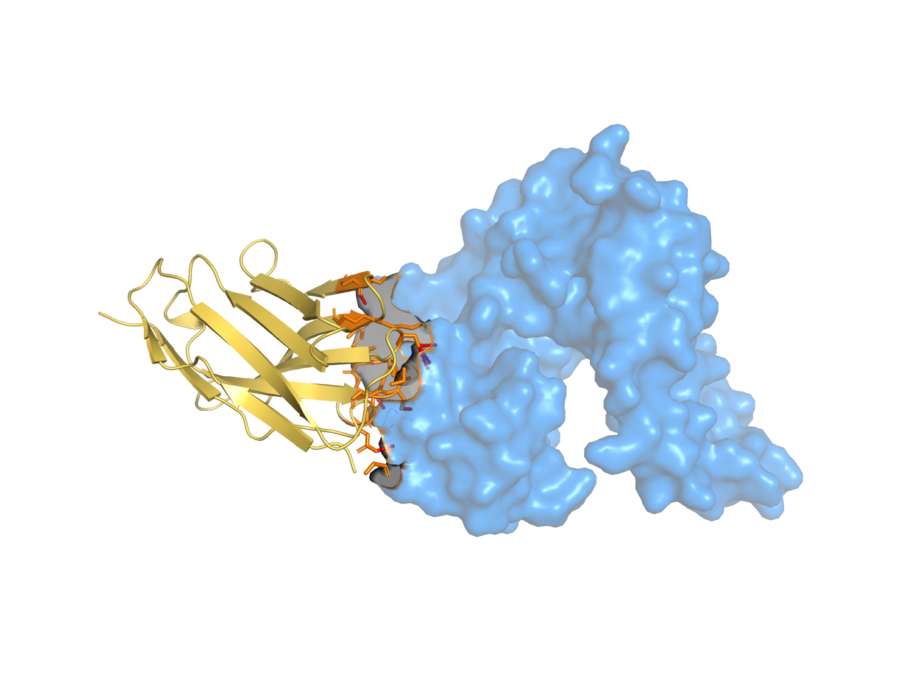
설계한 나노바디(금색, 단일 VHH 도메인)가 penguinpox 타깃(파랑 표면)에 결합한 모습. 항체 Fab보다 훨씬 작은 단일 도메인으로 결합하는 게 보여요.
최종 선별셋의 실제 수치(상위 5개):
| rank | id | pTM | ipTM | RMSD(Å) | H-bond | CDR영역(aa) |
|---|---|---|---|---|---|---|
| 1 | penguinpox_07 | 0.747 | 0.252 | 1.43 | 4 | 28 |
| 2 | penguinpox_29 | 0.761 | 0.228 | 13.25 | 6 | 36 |
| 3 | penguinpox_06 | 0.785 | 0.195 | 19.31 | 3 | 29 |
| 4 | penguinpox_15 | 0.761 | 0.200 | 21.11 | 2 | 31 |
| 5 | penguinpox_14 | 0.754 | 0.193 | 23.02 | 4 | 44 |
읽는 법과 솔직한 해석:
num_design): 28~44잔기로 다양
— 4종 scaffold의 CDR3 길이 차이가 반영됐어요.심화 — 왜 ipTM이 0.2대로 낮고 RMSD가 높을까요? 이건 실패가 아니라 교육적 포인트예요. 우리는 데모를 위해
num_designs 30이라는 아주 작은 표본만 뽑았어요. Ch.04에서 배웠듯, 좋은 디자인은 분포의 “좋은 꼬리”에 있고 그걸 만나려면 표본을 많이 뽑아야 해요. penguinpox는 어려운 타깃이라, 실전이라면num_designs를 2,000~10,000으로 올려야 ipTM 0.5+ 후보가 꼬리에서 나와요(기초 5부작의 100-design 런에서는 rank 1 ipTM이 0.5를 넘었어요). 즉 이 결과는 “규모가 품질을 만든다”는 원리를 직접 보여주는 사례예요. 그럼에도 rank 1처럼 ipTM·RMSD가 동시에 괜찮은 후보가 적은 표본에서도 나온다는 점은 고무적이고요.
나노바디는 작아서 대장균에서 손쉽게 발현·정제돼요(항체보다 훨씬 저렴·빠름). 상위 후보를:
실험 후보는 ipTM 최고(결합력) + liability_score 낮음(개발성) + RMSD 낮음(구조) 을 함께 만족하는 것을 우선하세요.
nanobody-anything은 antibody-anything과
동일 설정(Cys 금지 + design_folding 생략 → 5단계).EVQLVESGGG...) 확인이 정상 그래프팅의 증거,
liability로 개발성 점검.num_design이 재디자인 CDR 영역 길이 — “CDR3 길이”는
별도 출력 컬럼이 아님(서열에서 직접 셈).지금까지는 단백질·펩타이드·항체로 다른 단백질에 붙는 바인더를 만들었어요. 이번엔 방향이 조금 달라요. 작은 화합물(소분자, ligand)에 결합하는 단백질을 설계해볼 거예요. 효소·바이오센서·약물 운반체 설계의 토대가 되는 실습이에요.
그리고 이 프로토콜만의 특별한 기능, 결합 친화도(affinity) 예측도 직접 봐요.
실습 — 노트북은
05_analysis_viz.ipynb의 affinity 분석 파트와 함께 보세요.
작은 화합물에 결합하는 단백질은 쓰임새가 정말 넓어요.
즉 “단백질이 작은 분자를 정확히 알아보고 붙잡는” 능력을 설계하는 거예요.
소분자(ligand)는 두 가지로 지정해요(Ch.02 복습).
# 방법 1: CCD 코드 (PDB 화학성분 사전, 잘 알려진 분자)
- ligand: { id: B, ccd: TSA } # chorismate mutase의 전이상태 유사체
# 방법 2: SMILES (표준 코드가 없는 신약 후보 등)
- ligand: { id: B, smiles: "C1CNC[C@@H]1OC2=C(...)..." }이번 실습 타깃은 chorismate(아미노산 생합성
중간체)예요. 정확히는 그 전이상태 유사체(CCD TSA)에
결합하는 단백질을 설계해, chorismate mutase 같은 효소의 활성부위를
모사해요.
entities:
- protein: { id: A, sequence: 140..180 } # 설계할 효소(140~180잔기)
- ligand: { id: B, ccd: TSA } # 결합할 소분자심화 — 소분자 결합은 단백질-단백질보다 까다로워요. 작은 분자는 결합면이 좁아 “포켓”에 정확히 맞아야 하거든요. 그래서
num_designs를 더 크게(3,000+) 잡는 걸 권장해요. CCD 코드는 RCSB에서 해당 분자를 검색해 찾고, 없으면 SMILES나.sdf로 직접 넣어요.
protein-small_molecule 프로토콜 — 7단계!소분자 프로토콜은 다른 것과 결정적으로 달라요. affinity(친화도) 예측 단계가 추가돼서 7단계예요.
design → inverse_folding → folding → design_folding → affinity → analysis → filtering
↑ 소분자만!design_folding도 포함(단백질 기반이라)되고, 거기에
affinity 스텝이 더해져요.
boltzgen run example/protein_binding_small_molecule/chorismite.yaml \
--output workbench/sm --protocol protein-small_molecule \
--num_designs 3000 --budget 40주의 — affinity 예측을 쓰려면 반드시
protein-small_molecule프로토콜이어야 해요. 다른 프로토콜로 돌리면 affinity 컬럼이 안 나와요.
소분자 결합의 핵심은 포켓(pocket)이에요. 단백질 표면에 움푹 들어간 공간에 소분자가 쏙 들어가, 안쪽 잔기들과 다양한 상호작용(수소결합·소수성·π-π 스택·염다리)을 맺어요.
좋은 포켓의 조건: - 모양 상보성(shape complementarity) — 소분자와 포켓 모양이 잘 맞음 - 충분한 매몰 — 소분자가 충분히 묻힘(노출되면 약하게 결합) - 적절한 상호작용 — 수소결합·소수성 접촉이 골고루
결과에서 delta_sasa_refolded(매몰 표면적)와
plip_hbonds_refolded(수소결합)로 포켓 품질을 가늠해요.
이 프로토콜만의 특별한 출력이에요.
| 컬럼 | 의미 |
|---|---|
affinity_pred_value |
예측 결합 친화도(회귀값, 대략 결합 세기) |
affinity_probability_binary |
“결합한다” 이진 확률 |
affinity_probability_binary1,
_binary2 |
보조 이진 분류 확률 |
affinity_pred_value1, _value2 |
보조 회귀값 |
심화 — 친화도 예측은 본질적으로 어려운 문제라, 절대값보다 상대 비교로 쓰는 게 안전해요. “후보들 중 affinity_pred_value가 상대적으로 높고 affinity_probability_binary가 높은 것”을 우선 검토하는 식이에요. 그리고 BoltzGen affinity는 1차 스크리닝 신호로 쓰고, 유망 후보는 AutoDock Vina 같은 도킹·MD로 교차 검증하는 게 정석이에요(Ch.06.7).
실제로 protein-small_molecule, num_designs 30, budget
10으로 돌린 결과예요. 7단계(affinity 포함)가 정상
완료됐어요.
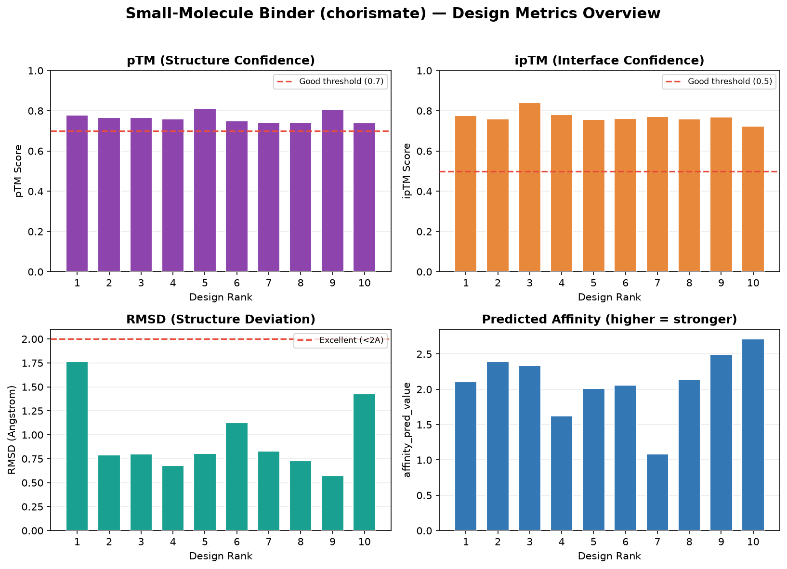
1위 디자인의 결합 포켓을 들여다보면 이래요:
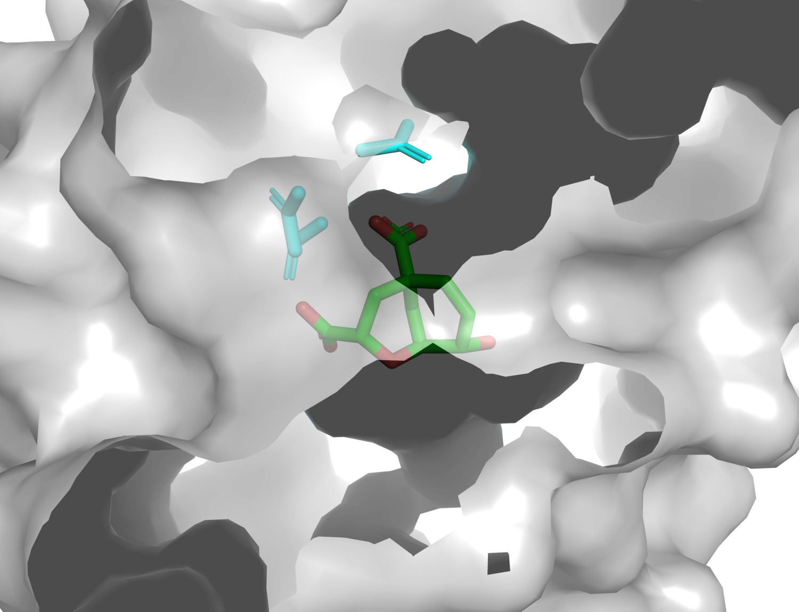
설계한 단백질의 포켓(회색 표면)에 소분자 리간드 chorismate/TSA(초록 sticks)가 쏙 들어간 모습. 청록색이 포켓을 이루는 잔기예요. “이 분자 하나를 감싸는 주머니”를 설계한다는 게 이런 거예요.
최종 선별셋의 실제 수치(상위 5개):
| rank | id | pTM | ipTM | RMSD(Å) | affinity_pred_value | p_bind |
|---|---|---|---|---|---|---|
| 1 | chorismite_29 | 0.780 | 0.776 | 1.76 | 2.11 | 0.38 |
| 2 | chorismite_28 | 0.768 | 0.761 | 0.79 | 2.39 | 0.41 |
| 3 | chorismite_12 | 0.767 | 0.841 | 0.80 | 2.34 | 0.40 |
| 4 | chorismite_10 | 0.760 | 0.781 | 0.68 | 1.62 | 0.37 |
| 5 | chorismite_14 | 0.813 | 0.757 | 0.80 | 2.01 | 0.35 |
해석 — 우리가 돌린 6개 실습 중 가장 좋은 결과예요:
affinity_pred_value
1.6~2.4, affinity_probability_binary 0.35~0.41): 절대값보다
상대 비교로 봐요. rank 2·3(affinity 2.39·2.34)이 결합이 가장 강할 것으로
예측돼요.심화 — 왜 소분자가 가장 잘 나왔을까요? 결합 인터페이스가 작고 명확하기 때문이에요. 큰 단백질-단백질 인터페이스는 넓은 면을 동시에 맞춰야 해서 어렵지만, 소분자 포켓은 “이 분자 하나를 감싸는 주머니”만 잘 만들면 돼요. 다만 주의할 점 — ipTM·RMSD가 좋아도 affinity는 별도로 봐야 해요. 구조적으로 잘 감싸도 실제 결합 세기(친화도)는 다를 수 있거든요. 그래서 affinity 예측이 높은 rank 2·3을 우선 검토하고, AutoDock Vina로 교차 검증하는 게 정석이에요(Ch.06.7).
형광 바이오센서 예시: 특정 분자(예: glutamate)에 결합하면 구조가 바뀌며 형광이 켜지는 센서.
entities:
- protein: { id: A, sequence: 200..250 } # 형광 단백질 변이체
- ligand: { id: L, ccd: GLU } # 검출할 분자리간드가 결합 → 구조 변화 → 형광 변화 → 검출. 매우 특이적인 분자 감지가 가능해요.
교차 검증: BoltzGen affinity는 빠른 1차 신호예요. 상위 후보는 AutoDock Vina로 재도킹해 친화도를 독립 검증하고, 필요하면 MD로 결합 안정성까지 확인하세요(Ch.06.7).
# 구조 준비 후 Vina 재도킹
vina --receptor protein.pdbqt --ligand ligand.pdbqt --out docked.pdbqtprotein-small_molecule은 affinity 단계가 추가된
7단계 — 친화도 예측은 이 프로토콜에서만.delta_sasa_refolded·plip_hbonds_refolded, 결합
세기는
affinity_pred_value·affinity_probability_binary로
— 절대값보다 상대 비교.num_designs를 크게, 유망 후보는
도킹·MD로 교차 검증.드디어 마지막 실습이에요! 이번엔 가장 특별한 타깃, 핵산(DNA·RNA)에 결합하는 단백질을 설계해요. 유전자 편집 도구, 맞춤형 전사인자, 핵산 센서 — 합성생물학의 핵심 도구들이 여기서 나와요.
DNA 결합 단백질의 슈퍼스타인 zinc finger를 de novo로 설계하고(BoltzGen의 고급 입력 기능을 총동원해요), 이어서 RNA 타깃까지 다뤄볼 거예요.
실습 — 노트북
11_nucleic_lab.ipynb. DNA·RNA 타깃 준비와 결과 분석을 담아요.
DNA·RNA에 특이적으로 결합하는 단백질은 생명공학의 가장 강력한 도구예요.
즉 “유전 정보 자체를 읽고 조작하는” 단백질을 설계하는 거예요.
핵산 결합 설계가 특별한 이유는, DNA·RNA가 단백질과 물리적으로 매우 다르기 때문이에요.
zinc finger는 아연 이온(Zn²⁺)이 구조를 잡아주는 작은 도메인이에요.
Zn²⁺
/ \
Cys His ← Zn을 붙잡는 4개 잔기(보통 Cys2-His2)
\ /
α-helix ──▶ DNA major groove에 삽입, 약 3개 염기쌍 인식아연이 구조를 단단히 고정하고, 그 안정된 α-helix가 DNA major groove에 들어가 염기를 읽어요. helix 하나가 약 3염기쌍을 인식하죠.
좋은 소식! Ch.02에서 봤듯, 핵산 타깃은 특별한 설정이 거의
필요 없어요. DNA/RNA가 들어 있는 CIF를 file로
불러와 include하면, BoltzGen이 잔기 코드(CCD)를 보고
DNA·RNA를 자동으로 구분·처리해요.
entities:
- protein: { id: G, sequence: 40..120 } # DNA에 결합할 새 단백질
- file:
path: zf.cif
include:
- chain: { id: C1 } # DNA 가닥 1 (자동으로 DNA로 인식)
- chain: { id: B1 } # DNA 가닥 2이게 가장 단순한 de novo DNA 결합 단백질
설계예요(denovo_zinc_finger_against_dna/vanilla_protein.yaml).
단백질(G)을 새로 만들어 DNA 가닥(C1, B1)에 붙여요.
진짜 zinc finger 예제(zinc_finger.yaml)는 BoltzGen에서
가장 복잡한 설계 명세 중 하나예요. 기존 zinc finger를
재설계하면서, Ch.02에서 배운 고급 기능을 거의 다 써요. 한 줄씩
뜯어볼게요.
entities:
- file:
path: zf.cif
include: "all" # 전체 포함 후
exclude: # 불필요한 부분 제외
- chain: { id: A1, res_index: ..10,63..69,185.. }
design_insertions: # finger 사이 linker 삽입
- insertion: { id: A1, res_index: 63, num_residues: 3..8 }
structure_groups: # 구조를 숨겨 자유 재설계
- group: { visibility: 0, id: "all" }
design: # 재설계할 영역
- chain: { id: A1, res_index: 11..184 }
not_design: # Zn 배위 잔기 등 고정
- chain: { id: A1, res_index: 11..20,29,33,39..48,57,61,72..81,90,94,100..109,118,122,129..138,147,151,157..166,175,179 }
reset_res_index: # 번호 정리
- chain: { id: A1 }각 기능의 역할:
| 기능 | 무엇을 하나 | 왜 |
|---|---|---|
exclude |
N/C 말단·특정 구간 제거 | 불필요한 부분 정리, 시스템 경량화 |
design_insertions |
finger 사이 linker(3~8잔기) 삽입 | DNA 인식 최적화를 위한 유연성 |
structure_groups: visibility 0 |
구조 숨김 → 자유 재설계 | 타깃 DNA마다 최적 구조가 다르므로 |
design / not_design |
재설계 영역 vs 고정 영역 분리 | Zn 배위 잔기(Cys/His)는 절대 고정 |
reset_res_index |
잔기 번호 연속 정리 | exclude·insertion 후 번호 정돈 |
심화 —
not_design에 들어간 잔기들이 핵심이에요. zinc finger는Cys-X2-Cys-X12-His-X3-His패턴으로 Zn²⁺을 붙잡는데, 이 4개 잔기 중 하나라도 바뀌면 Zn이 안 붙고 구조가 무너져요. 그래서 이들을not_design으로 못박는 거예요. 효소의 catalytic triad, 이황화 Cys, 금속 결합 부위 등 “기능에 필수인 잔기”는 항상 이렇게 고정해야 해요.
실행:
boltzgen run example/denovo_zinc_finger_against_dna/zinc_finger.yaml \
--output workbench/dna --protocol protein-anything \
--num_designs 30 --budget 10실제로 protein-anything, num_designs 30, budget 10으로
돌린 zinc finger 재설계 결과예요. 6단계가 정상 완료됐어요.
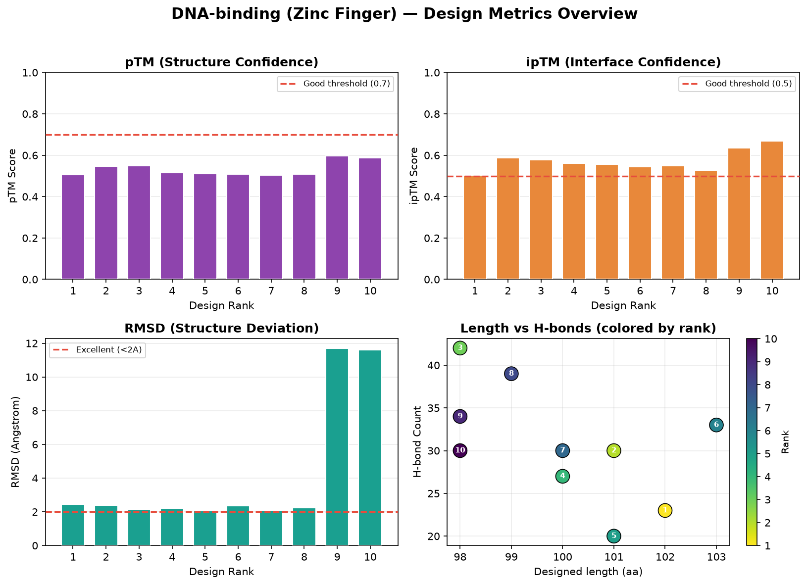
1위 디자인의 복합체 구조예요:
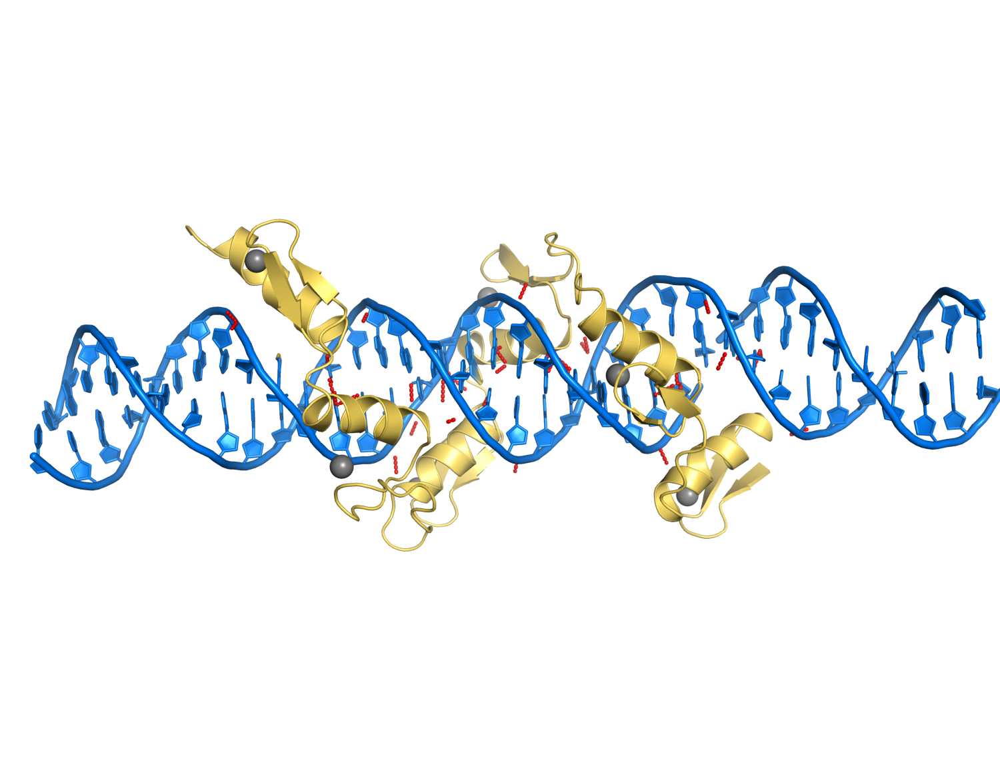
설계한 단백질(금색)이 DNA 이중나선(파랑)의 groove를 따라 결합한 모습. 회색 구는 Zn 이온, 빨간 점선은 다수의 수소결합이에요. 단백질이 DNA를 휘감듯 따라가는 게 보이죠 — 평균 H-bond 30.8개가 이렇게 만들어져요.
최종 선별셋의 실제 수치(상위 5개):
| rank | id | pTM | ipTM | RMSD(Å) | H-bond | 길이(aa) |
|---|---|---|---|---|---|---|
| 1 | zinc_finger_06 | 0.506 | 0.503 | 2.43 | 23 | 102 |
| 2 | zinc_finger_22 | 0.546 | 0.588 | 2.37 | 30 | 101 |
| 3 | zinc_finger_02 | 0.550 | 0.577 | 2.14 | 42 | 98 |
| 4 | zinc_finger_14 | 0.516 | 0.561 | 2.20 | 27 | 100 |
| 5 | zinc_finger_08 | 0.511 | 0.557 | 2.06 | 20 | 101 |
이 결과가 DNA 결합의 특성을 교과서처럼 보여줘요:
심화 — H-bond 수가 곧 결합 품질은 아니에요. DNA 결합에서 진짜 중요한 건 염기 서열 특이성(특정 염기를 읽는가)인데, 이건 H-bond 총수보다 인터페이스의 기하·위치에 달려 있어요. 그래서 실전에서는 H-bond가 많은 후보 중 결합부위가 의도한 DNA 염기에 정확히 놓이는지를 PyMOL로 검증하고, 비슷한 서열에 오프타깃 결합하지 않는지 비교해요. Zn 배위 잔기를
not_design으로 고정한 게 이 특이성의 토대고요(11.4).
DNA를 했으니 RNA도 해볼까요? 방법은 완전히 동일해요 — RNA가 들어 있는 CIF만 있으면 BoltzGen이 자동으로 RNA로 인식해요.
RNA는 DNA와 몇 가지가 달라요: - 단일 가닥(single-strand)인 경우가 많고, 복잡한 2차/3차 구조(헤어핀, 루프, pseudoknot)를 가져요. - 그래서 결합 부위가 더 다양하고, 구조 의존적이에요.
RNA 타깃 준비(노트북 11_nucleic_lab.ipynb에서 실습):
# 1) RNA-단백질 복합체 구조를 받아 RNA 체인을 타깃으로 추출
import urllib.request
urllib.request.urlretrieve("https://files.rcsb.org/download/XXXX.cif", "rna_target.cif")
# 2) 설계 명세entities:
- protein: { id: P, sequence: 60..120 } # RNA에 결합할 단백질
- file:
path: rna_target.cif
include:
- chain: { id: R } # RNA 가닥 (자동 인식)
structure_groups: "all"boltzgen run rna_spec.yaml --output workbench/rna \
--protocol protein-anything --num_designs 30 --budget 10실제로 1URN의 U1 snRNA 헤어핀(20 nt)을 타깃으로,
protein-anything, num_designs 30, budget 10으로 돌린
결과예요. RNA만 깨끗이 추출해 단일 체인(R) PDB로 만든 타깃이에요(위 준비
과정).
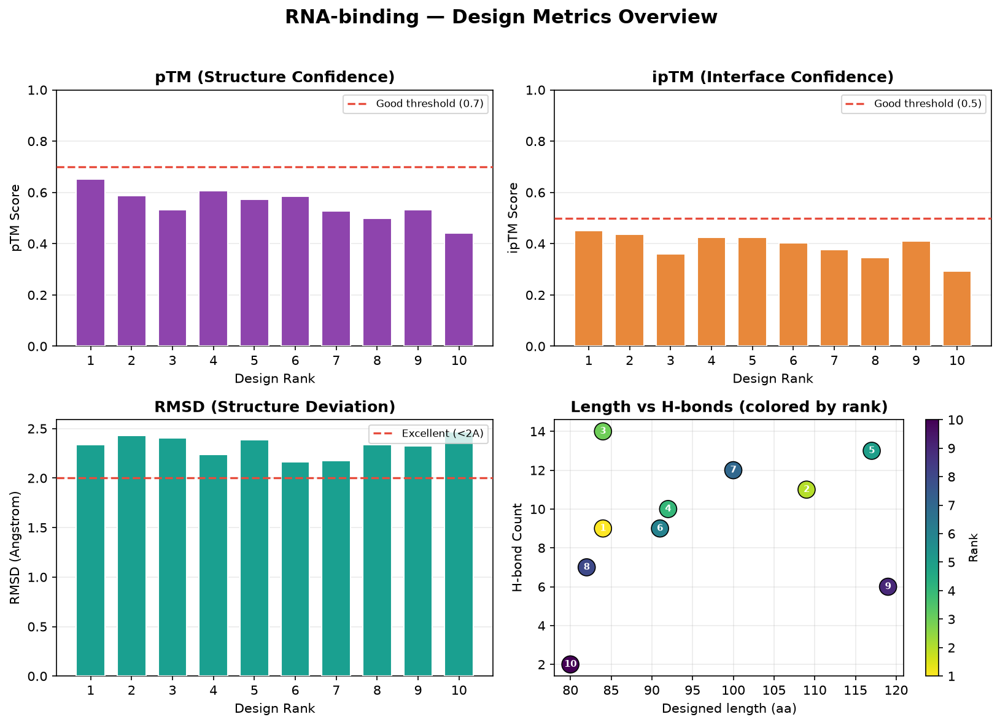
1위 디자인의 복합체 구조예요:
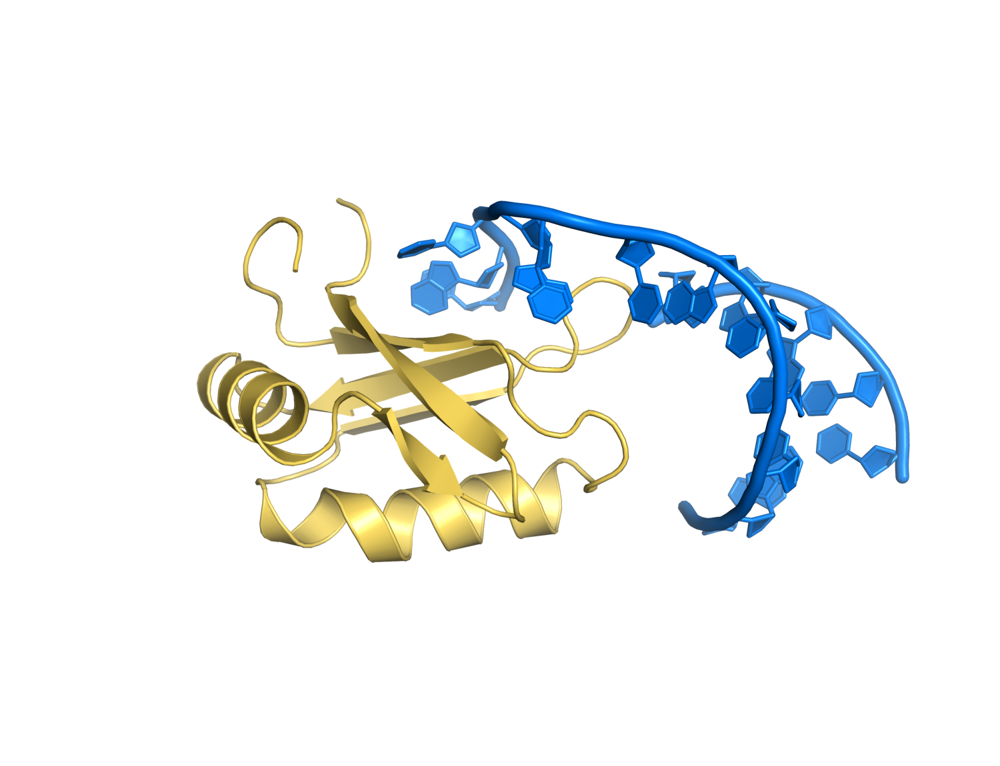
설계한 단백질(금색)이 RNA 헤어핀(파랑)에 결합한 모습. DNA 이중나선과 달리 단일가닥 RNA가 접힌 형태에 결합하는 게 보여요.
최종 선별셋의 실제 수치(상위 5개):
| rank | id | pTM | ipTM | RMSD(Å) | H-bond | 길이(aa) |
|---|---|---|---|---|---|---|
| 1 | rna_spec_29 | 0.652 | 0.451 | 2.33 | 9 | 84 |
| 2 | rna_spec_07 | 0.587 | 0.436 | 2.43 | 11 | 109 |
| 3 | rna_spec_04 | 0.532 | 0.359 | 2.40 | 14 | 84 |
| 4 | rna_spec_16 | 0.607 | 0.424 | 2.24 | 10 | 92 |
| 5 | rna_spec_09 | 0.573 | 0.424 | 2.39 | 13 | 117 |
해석 — DNA와 비교하면 RNA 결합의 특성이 드러나요:
심화 — DNA vs RNA 설계 난이도: DNA 이중나선은 규칙적인 groove 구조라 결합 단백질 설계가 (상대적으로) 수월하고 H-bond·ipTM이 높게 나와요. 반면 RNA는 단일가닥에 헤어핀·루프·pseudoknot 같은 복잡하고 유연한 3차 구조를 가져, 결합부위가 다양하고 예측이 더 어려워요. 그래서 RNA 결합 단백질 설계는 타깃 RNA의 구조를 잘 정의하고(이번엔 잘 구조화된 U1 헤어핀 사용), num_designs를 충분히 키우는 게 특히 중요해요.
심화 — 핵산 결합 설계에서 가장 중요한 건 특이성이에요. 비슷한 서열에 잘못 결합하면 오프타깃 효과가 생기니까요. 그래서 결합부위(binding_types)를 정밀하게 지정하고, 여러 후보를 만들어 특이성을 비교하는 게 핵심이에요. Zn 배위 잔기 같은 기능 필수 잔기는 반드시
not_design으로 고정하고요.
include.이것으로 Part B(타깃별 실습)를 모두 마쳤어요! 단백질·펩타이드·항체·나노바디·소분자·핵산 — 모든 바인더 타입을 직접 설계하고 해석하는 법을 익혔습니다. 이제 여러분만의 타깃에 도전해보세요.
본문을 따라 실습하다 보면 “이 메트릭이 뭐였지?”, “그 옵션 이름이 뭐였지?” 하고 다시 찾게 돼요. 이 부록은 그럴 때 빠르게 찾아보는 레퍼런스 모음이에요. 곁에 두고 필요할 때 펴 보세요.
BoltzGen 메트릭 CSV는 240개가 넘는 컬럼을 갖지만, 카테고리로 묶으면 한눈에 들어와요. (Ch.05의 확장판)
| 컬럼 | 의미 | 좋은 값 |
|---|---|---|
design_ptm |
설계 단백질 자체 구조 신뢰도(pTM) | 높을수록 (>0.7 양호, >0.8 우수) |
design_to_target_iptm |
바인더-타깃 인터페이스 신뢰도(ipTM) — 핵심 | 높을수록 (>0.5 양호) |
design_residue_iptm |
잔기별 인터페이스 TM | 높을수록 |
design_iptm |
설계 영역 내부 신뢰도 | 높을수록 |
iptm / ptm |
복합체 전체 ipTM / pTM | 높을수록 |
target_ptm |
타깃 체인 pTM | 높을수록 |
protein_iptm / ligand_iptm |
단백질-단백질 / 리간드-단백질 인터페이스 | 높을수록 |
complex_plddt / complex_iplddt |
복합체 / 인터페이스 pLDDT | 높을수록 (보조 지표) |
| 컬럼 | 의미 | 좋은 값 |
|---|---|---|
min_design_to_target_pae |
바인더-타깃 최소 PAE | 낮을수록 (<5Å) |
min_interaction_pae / interaction_pae |
복합체 최소/평균 상호작용 PAE | 낮을수록 |
complex_pde / complex_ipde |
복합체/인터페이스 PAE | 낮을수록 |
| 컬럼 | 의미 | 좋은 값 |
|---|---|---|
filter_rmsd |
필터링용 RMSD(자기일관성) | 낮을수록 (<2Å 우수) |
designfolding-filter_rmsd |
바인더 단독 재접힘 RMSD | 낮을수록 |
rmsd_design / rmsd_target |
설계/타깃 백본 RMSD | 낮을수록 |
designability_rmsd_2 / _rmsd_4 |
RMSD ≤ 2/4Å 통과 여부(불리언) | True |
| 컬럼 | 의미 | 비고 |
|---|---|---|
plip_hbonds_refolded |
인터페이스 수소결합 수 | 많을수록(맥락 의존). DNA는 매우 많음 |
plip_saltbridge_refolded |
염다리(이온결합) 수 | 전하 상호작용 |
delta_sasa_refolded |
매몰 표면적(ΔSASA, Ų) | 클수록 넓은 접촉 |
| 컬럼 | 의미 |
|---|---|
liability_score |
종합 위험 점수 (낮을수록 좋음) |
liability_num_violations |
위반 모티프 총 개수 |
liability_high/medium/low_severity_violations |
심각도별 위반 수 |
liability_MetOx_count |
메티오닌 산화 위험 |
liability_TrpOx_count |
트립토판 산화 위험 |
liability_AspCleave/AspBridge_count |
아스파르트산 이성질화·절단 |
liability_ProtTryp_count |
단백분해 절단 부위 |
liability_HydroPatch_count |
소수성 패치(응집 위험) |
| 컬럼 | 의미 |
|---|---|
affinity_pred_value |
예측 결합 친화도(회귀값) |
affinity_probability_binary (_binary1,
_binary2) |
결합 이진 확률 |
| 컬럼 | 의미 |
|---|---|
vendi_tm_align 등 |
선별 집합 다양성 점수 |
novelty |
학습셋 대비 신규성(FoldSeek) |
num_design |
재설계된 잔기 수(설계 영역 길이) |
designed_sequence /
designed_chain_sequence |
설계 서열 |
largest_hydrophobic |
최대 소수성 패치 |
| 컬럼 | 의미 |
|---|---|
rank_design_to_target_iptm,
rank_design_ptm,
rank_neg_min_design_to_target_pae,
rank_plip_hbonds_refolded,
rank_plip_saltbridge_refolded,
rank_delta_sasa_refolded |
메트릭별 순위 |
max_rank → secondary_rank →
final_rank |
종합 순위(최종) |
quality_score |
종합 품질 점수 |
boltzgen run)design_spec (위치 인자) — YAML 파일(들) 또는 config
디렉토리--protocol {protein-anything, peptide-anything, protein-small_molecule, nanobody-anything, antibody-anything, protein-redesign}
(기본 protein-anything)--output OUTPUT — 출력 디렉토리--config <step> k=v ... — 스텝별 설정 오버라이드
(예: --config analysis num_processes=24)--devices N / --num_workers N — GPU 수 /
데이터로더 워커--use_kernels {auto,true,false} — CUDA 커널(기본
auto)--reuse — 기존 결과 재사용, 부족분만 생성--steps {design,inverse_folding,folding,design_folding,affinity,analysis,filtering} ...
— 부분 실행--cache DIR / --models_token T /
--force_download — 모델 캐시·토큰·재다운로드--num_designs N (기본 10,000) — 생성 디자인 수--diffusion_batch_size N — 배치 크기(기본: <100이면
1, 아니면 10; 같은 배치는 길이 공유)--design_checkpoints A.ckpt B.ckpt — 백본
체크포인트(기본 diverse+adherence)--step_scale / --noise_scale — 디퓨전
스케줄 고정--inverse_fold_num_sequences N (기본 1) — 백본당 서열
수--inverse_fold_avoid 'KEC' — 금지 잔기(기본: protein
없음, peptide/nb/ab는 ‘C’)--skip_inverse_folding /
--only_inverse_fold--inverse_fold_checkpoint C.ckpt--folding_checkpoint D.ckpt /
--affinity_checkpoint E.ckpt--budget N (기본 30) — 최종 선별 수--alpha A (기본 peptide 0.01, 그 외 0.001) —
품질↔︎다양성--metrics_override metric=weight ... — 메트릭
가중치(클수록 down-weight)--additional_filters 'feat>th' 'feat<th' ... —
하드 필터--size_buckets min-max:count ... — 크기 구간별
할당--filter_biased {true,false} — AA 조성 이상치 제거--refolding_rmsd_threshold X — RMSD 하드 필터boltzgen check <yaml> — 설계 명세 검증(designed
residues + 시각화 CIF)boltzgen download — 모델 가중치 미리 받기boltzgen configure / execute — 설정 생성 /
사전설정 실행boltzgen merge <dir1> <dir2> ... --output <merged>
— 출력 병합| 프로토콜 | 스텝수 | design_folding | inverse fold Cys | affinity | 용도 |
|---|---|---|---|---|---|
protein-anything |
6 | 함 | 허용 | 안 함 | 단백질→단백질/펩타이드 |
peptide-anything |
5 | 안 함 | 금지 | 안 함 | (고리형) 펩타이드 |
protein-small_molecule |
7 | 함 | 허용 | 함 | 단백질→소분자 |
nanobody-anything |
5 | 안 함 | 금지 | 안 함 | 나노바디 CDR |
antibody-anything |
5 | 안 함 | 금지 | 안 함 | 항체 Fab CDR |
protein-redesign |
5 | 안 함 | 허용 | 안 함 | 기존 단백질 재설계 |
entities:
# 설계 단백질 (서열 표기)
- protein:
id: B
sequence: 80..140 # 범위 랜덤 / 120 고정 / MKLV.. 고정서열 / 3C8C6C5C3C1C2 Cys패턴
cyclic: true # 머리-꼬리 고리화
secondary_structure: { helix: 5..15, sheet: 20..28 }
residue_constraints:
- { position: 1, allowed: A }
- { position: 3..5, disallowed: CM }
# 핵산
- dna: { id: D, sequence: ATGC }
- rna: { id: R, sequence: AUGC }
# 소분자
- ligand: { id: L, ccd: ATP } # 또는 smiles: "..."
# 타깃(파일에서 추출)
- file:
path: target.cif # YAML 위치 기준 상대경로
include: [ { chain: { id: A } } ] # 또는 "all"
exclude: [ { chain: { id: A, res_index: 45..55 } } ]
binding_types: # 결합부위 지정
- chain: { id: A, binding: 95..110 }
- chain: { id: B, not_binding: "all" }
structure_groups: # visibility 0(숨김)/1(보임)/2(별도그룹)
- group: { id: A, visibility: 1 }
design: [ { chain: { id: A, res_index: 11..184 } } ]
not_design: [ { chain: { id: A, res_index: 11,14,29,33 } } ] # 기능 필수 잔기 고정
design_insertions: [ { insertion: { id: A, res_index: 63, num_residues: 3..8 } } ]
reset_res_index: [ { chain: { id: A } } ]
constraints:
- bond: { atom1: [B, 4, SG], atom2: [B, 26, SG] } # 이황화 등res_index 범위 문법: 45..55(범위) ·
..10(처음~10) · 185..(185~끝) ·
10,29,40..48(혼합)
| 증상 | 원인 | 해결 | 참조 |
|---|---|---|---|
torch.cuda.is_available()==False, “driver too old” |
torch CUDA가 드라이버보다 높음(major 불일치) | 드라이버 CUDA에 맞는 빌드(cu124 등) | Ch.03 |
undefined symbol: cublasGemmGroupedBatchedEx |
cuBLAS < 12.5 | nvidia-cublas-cu12>=12.5 설치 |
Ch.03 |
bad interpreter / 엉뚱한 pip |
pip이 다른 환경 가리킴 | python -m pip 사용 |
Ch.03 |
| 분석 단계 CPU 폭주·PC 멈춤 | analysis num_processes 기본 32 |
--config analysis num_processes=24 |
Ch.03·06 |
CUDA out of memory |
배치/시스템 큼 | --diffusion_batch_size 축소, 타깃 축소,
--num_designs 분할 후 merge |
Ch.03 |
FileNotFoundError: ...cif |
타깃 구조 파일 미존재 | RCSB에서 직접 다운로드 | Ch.02 |
Specified chain id X not in file |
mmCIF auth/label 체인ID 불일치 | RNA만 추출해 PDB로 저장 후 단일 체인 지정 | Ch.11 |
0/N designs passed filters |
제약 과다/타깃 어려움 | 제약 완화, --num_designs 증가, 필터 조정 |
Ch.06 |
| 모든 디자인이 비슷함 | 다양성 부족 | --budget↑, --num_designs↑,
--alpha↑ |
Ch.05·06 |
| RMSD 전부 높음 | 서열이 잘 안 접힘 | secondary_structure·disulfide·scaffold 추가 | Ch.07 |
| 측쇄가 원점에 뭉침 | inverse_folded 파일 시각화 | refold_cif 사용 |
Ch.01·04 |
Q. num_designs는 얼마로 잡아야 하나요? A. 테스트는 4~100, 일반 설계는 1,000~5,000, 어려운 타깃은 10,000~60,000. 많이 뽑을수록 좋은 디자인을 만날 확률이 올라가요(Ch.04).
Q. pLDDT가 높은데 왜 순위가 낮죠? A.
pLDDT(complex_plddt)는 순위의 주 지표가 아니에요. 순위는
ipTM·pTM·PAE·H-bond·salt-bridge·ΔSASA 종합으로 정해져요(Ch.05).
Q. ipTM이 0.3대인데 쓸 수 있나요? A. 어려운
타깃·소규모 런에서는 0.3~0.5도 의미 있어요. 단, 실전에선
num_designs를 키워 0.5+ 후보를 꼬리에서
건지세요(Ch.09).
Q. 결과를 실험 없이 바로 써도 되나요? A. 아니요. BoltzGen은 후보를 빠르게 좁혀주는 도구예요. 상위 후보는 반드시 실험(또는 도킹·MD)으로 검증하세요(Ch.06).
Q. CPU/PC가 멈춰요. A. 분석 단계가 기본 32
프로세스를 띄워요. --config analysis num_processes=24로
줄이고, 필요하면 taskset -c 0-27로 코어를
제한하세요(Ch.03).
Q. 한 GPU에서 여러 설계를 동시에 돌려도 되나요? A.
권장하지 않아요. 메모리 경합으로 OOM이 나기 쉬워요. 순차 실행 +
merge가 안전해요(Ch.06).
Q. 항체/나노바디에서 ipTM만 보면 되나요? A. 아니요.
developability(liability_score)를 함께 봐야 약으로 만들 수
있어요(Ch.08·09).
diverse+adherence 체크포인트).boltzgen1_ifold).boltz2_conf_final).folding).